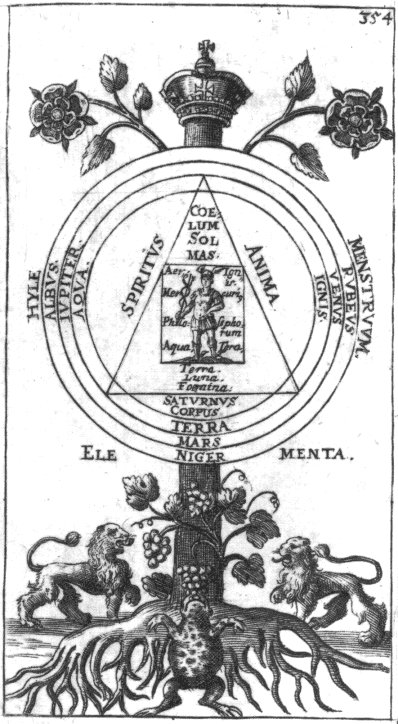
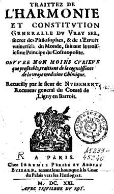

Le Cosmopolite ou
NOUVELLE LUMIERE CHYMIQUE
Pour servir d'éclaircissement aux trois Principes de la nature exactement décrits dans les trois Traités suivants Le I traite du Mercure le II, du Soufre et le
III, du vrai Sel des Philosophes.
A PARIS Chez Laurent d'Houry, rue S. Jacques devant la Fontaine S. Séverin, au S. Esprit M. DC. XCI AVEC PRIVILEGE DU ROY

revu le 6 janvier 2002
IntroductionLe traité du Sel, comme on le sait, fait partie des trois traités de la Nature dans lesquels on range le traité du Mercure, encore appelé les Douze Traités, le traité du Soufre et enfn le présent traité. Seuls les Douze traités ont été écrits par le premier Cosmopolite : Alexandre Sethon. Le traité du Soufre a été compilé par Michael Sendivogius qu'on appelle souvent aussi le Cosmopolite, ce qui a créé une confusion entre les deux personnages et l'on a souvent pris les Douze traités comme un ouvrage rédigé par Sendivogius alors que c'est la veuve de Sethon qui lui remit les manuscrits de son mari. Sendivogius épousa en effet la veuve de Sethon dans le but d'obtenir le secret de faire de l'or mais il n'obtint qu'une provision de « poudre de projection » et les notes de Sethon qui ont été publiées après sa mort sous le nom de « Douze Traités ». C'en est d'ailleurs au point que certains grands auteurs d'outre Atlantique, comme B.J. Dobbs [Les Fondements de l'Alchimie de Newton, Guy Trédaniel, 1981] ne citent pas Alexandre Sethon, ou s'ils le citent, c'est par accident. Quant au traité du Sel, on dit qu'il a été rédigé par le sieur Clovis Hesteau de Nuysement [ou Nuisement]. C'est là où les choses se compliquent car il a existé deux Nuysement : Clovis d'une part et Jacques d'autre part. Et les deux ont rédigé des traités hermétiques. D'un côté, on nous dit que l'ouvrage intitulé : Visions hermétiques et autres poèmes alchimiques, suivis des traités du vrai sel des philosophes et de l'esprit général du monde a été écrit par Clovis Hesteau de Nuysement. Ce titre peu connu représente l'un des ouvrages les plus recherchés par les alchimistes. On ne saura jamais si le poète Hesteau de Nuysement fut ou non élève de Ronsard. Son style relève de la sensibilité de l'académie de Florence où s'entre-déchiraient dans des joutes scolastiques Marsile Ficin et Pic de la Mirandole. La poésie de cet illustre paganiste, restera unique dans son genre, en tant que véhicule d'une pensée alliant un mélange détonnant fait de mythologie, d'érotisme et de sorcellerie. Noble, poète, philosophe, académicien, libertin (il était l'amant de la reine Marguerite de Valois), cet auteur, selon la légende, reçoit l'initiation à la fin de sa vie. Notez que l'ouvrage dont nous parlons est disponible sur Internet, sur le serveur Gallica de la bnf ; mais la matière de cet ouvrage n'a rien à voir avec le Traité du Sel, tel qu'il est inséré dans la Nouvelle Lumière chymique. Qui plus est, deux sources permettent d'attribuer un traité du Sel à Jacques de Nuysement. Ainsi, on trouve à Florence le Traité du Vrai Sel secret des philosophes, attribué à Jacques Nuysement
[Firenze, Biblioteca Laurenziana MS. Ashburnham 338. 17th Century. Paper. Folio.(Jacques Nuysement) Trattato dell' Harmonia, Constitutione, o Fabrica Generale del Vero Sale Secreto de' Filosofi et dello Spirito Universale del Mondo].
On trouve un autre ouvrage, intitulé Monte Cubiti, Vigilantius. Ce livre réunit trois traités, l'un de la main de Jacques de Nuysement sur le Sel philosophique, un autre attribué à Marsile Ficin sur la Pierre philosophale et enfin, une traduction en allemand d'un traité de Samuel Norton
[1548-1604, qui était l'arrière grand-père de l'alchimiste anglais Thomas Norton qui écrivit le long poème inclus dans le Theatrum Chemicum Britannicum d'Ashmole, en 1652 et que nous avons évoqué en introduction aux Douze Portes de Ripley].
L'ensemble de ces écrits apparaît sous forme d'un volume de huit petits traités en latin, imprimés à Francfort en 1630 par William Fitzer sous le titre de Mercurius redivivus. Une version en allemand est incluse aussi dans la compilation Eines wahren Adepti besondere Geheimnisse von der Alchymie, 1757.

FIGURE I
(Monte Cubiti, Vigilantius, frontispice)dont on appréciera la page de frontispice dans ce superbe emblème qui réunit plusieurs arcanes de l'oeuvre : le crapaud, les lions, la vigne, les racines et les fleurs épanouies en sont les symbole exotériques. L'ésotérisme - de bon aloi - se devine dans le cercle entouré de figures concentriques où figurent les Quatre Eléments.
Quoi qu'il en soit, le Traité du Sel Philosophique de Nuysement n'a rien à voir avec le Traité du Sel que vous avez sous les yeux. Et pour les uns, il aurait été écrit par le sieur Clovis Hesteau de Nuysement, pour les autres, Jacques de Nuysement...Voici d'ailleurs la page de garde de ce Traité :

FIGURE II
(le Traité du vrai Sel secret des Philosophes)Le lecteur trouvera des notes sur ce traité, situées dans la section sur le vrai Cosmopolite, et touchant surtout les Discours traduits de vers qui résument chaque chapitre.
Table des matières Au Lecteur - Traité du sel - Chapitre I De la qualité et condition du Sel de la Nature. - Chapitre II Où est-ce qu'il faut chercher notre Sel - Chapitre III De la dissolution - Chapitre IV Comment notre Sel est divisé en quatre Eléments selon l'intention des Philosophes - Chapitre V De la préparation de Diane plus blanche que la neige - Chapitre VI Du mariage du serviteur rouge avec la femme blanche - Chapitre VII Des degrés du feu - Chapitre VIII De la vertu admirable de notre Pierre salée et aqueuse - Récapitulation - Dialogue qui découvre plus amplement la préparation de la Pierre Philosophale
Ami Lecteur, ne veuille point, je te prie, t'enquérir quel est l'auteur de ce petit Traité et ne cherche point à pénétrer la raison pour laquelle il l'a écrit. Il n'est pas besoin non plus que tu saches qui je suis moi-même. Tiens seulement pour très assuré que l'auteur de ce petit ouvrage possède parfaitement la Pierre des Philosophes et qu'il l'a déjà faite. Et parce que nous avions une sincère et mutuelle bienveillance l'un pour l'autre, je lui demandais, pour marque de son amitié, qu'il m'expliquât les trois premiers Principes, qui sont le Mercure, le Soufre et le Sel. Je le priai aussi de me dire s'il fallait chercher la Pierre des Philosophes en ceux que nous voyons et qui sont communs ; ou que s'il y en avait d'autres, il me le déclarât en paroles très claire et d'un style simple et non embarrassé. Ce que m'ayant accordé, après avoir écrit ce que je pus de ces petits Traités à la dérobée, je me suis persuadé qu'en les faisant imprimer, bien que contre le plaisir de l'auteur, qui est tout hors d'ambition, les vrais amateurs de la Philosophie m'en auraient obligation. Car je ne doute point que, les ayant lus et bien exactement considérés, ils se donneront mieux garde des imposteurs et seront moins de perte de temps, d'argent, d'honneur et de réputation. Prends donc (Ami Lecteur) en bonne part l'intention que nous avons de te rendre service ; mets toute ton espérance en Dieu ; adore-le de tout ton cœur et le révère avec crainte. Garde le silence avec soin ; aime le prochain avec bienveillance, et Dieu t'accordera toutes choses. Le commencement de la Sagesse est de craindre Dieu. Les Œuvres Du Cosmopolite Divisées en trois Traités Dans lesquels sont clairement expliquées les trois Principes des Philosophes Chymiques, Sel, Soufre et Mercure Traité du sel Troisième Principe des choses minérales1
Chapitre I De la qualité et condition du Sel de la Nature.
Le Sel est le troisième Principe de toutes choses, duquel les anciens Philosophes n'ont point parlé. Il nous a été pourtant expliqué et comme montré du doigt par I. Isaac Hollandais2, Basile Valentin et Teoph. Paracelse. Ce n'est pas que parmi les Principes il y en ait quelqu'un qui soit premier, et quelqu'un qui soit dernier, puisqu'ils ont une même origine et un commencement égal entre eux : mais nous suivons l'ordre de notre Père, qui a donné le premier rang au Mercure, le second au Soufre et le troisième au Sel. C'est lui principalement qui est un troisième être, qui donne le commencement aux minéraux, qui contient en soi les deux autres Principes, savoir le Mercure et le Soufre, et qui, dans sa naissance n'a pour Mère que l'impression de Saturne, qui le restreint et le rend compact, de laquelle le corps de tous les métaux est formé. II y a trois sortes de Sels. Le premier est un Sel central, que l'esprit du monde engendre sans aucune discontinuation dans le centre des Eléments par les influences des Astres et qui est gouverné par les rayons du Soleil et de la Lune en notre Mer philosophique. Le second est un Sel spermatique, qui est le domicile de la semence invisible, et qui, dans une douce chaleur naturelle, par le moyen de la putréfaction donne de soi la forme et la vertu végétale, afin que cette invisible semence très volatile ne soit pas dissipée et ne soit pas entièrement détruite par une excessive chaleur externe, ou par quelque autre contraire et violent accident : car, si cela arrivait, elle ne serait plus capable de rien produire. Le troisième Sel est la dernière matière de toutes choses, lequel se trouve en icelles et qui reste encore après leur destruction. Ce triple Sel a pris naissance dès le premier point de la Création, lorsque Dieu dit : soit fait ; et son existence fut faite du néant, d'autant que le premier Chaos du monde n'était autre chose qu'une certaine crasse et salée obscurité, ou nuée de l'abîme, laquelle a été concentrée et créée des choses invisibles par la parole de Dieu, et est sortie par la force de sa voix, comme un être qui devait servir de première matière et donner la vie à chaque chose, et qui est actuellement existant. Il n'est ni sec, ni humide, ni épais, ni délié, ni lumineux, ni ténébreux, ni chaud, ni froid, ni dur, ni mol ; mais c'est seulement un chaos mélangé, duquel puis après toutes choses ont été produites et séparées. Mais, en cet endroit, nous passerons ces choses sous silence et nous traiterons seulement de notre Sel, qui est le troisième Principe des minéraux, et qui est encore le commencement de notre œuvre philosophique. Que si le Lecteur désire tirer du profit de l'avancement de ce mien discours et comprendre ma pensée, il faut avant toute œuvre qu'il lise avec très grande attention les écrits des autres véritables Philosophes, et principalement ceux de Sendivogius dont nous avons fait mention ci-dessus, afin que de leur lecture il connaisse fondamentalement la génération et des premiers Principes des métaux, qui procèdent tous d'une même racine. Car celui qui connaît exactement la génération des métaux n'ignore pas aussi leur amélioration et leur transmutation. Et après avoir ainsi connu notre fontaine de Sel, on lui donnera ici le reste des instructions qui lui sont nécessaires, afin qu'ayant prié bien dévotement il puisse, par sa sainte grâce et bénédiction, acquérir ce précieux Sel blanc comme neige ; qu'il puisse puiser l'eau vive du Paradis et qu'il puisse avec icelle préparer la Teinture philosophique, qui est le plus grand trésor et le plus noble don que Dieu ait jamais donné en cette vie aux sages Philosophes. Discours traduit de vers
Priez Dieu qu'il vous donne la Sagesse, sa clémence et sa grâce,
Par le moyen desquelles on peut acquérir cet Art.
N'appliquez point votre esprit à d'autres choses,
Qu'à cet Hylech des Philosophes.
Dans la fontaine du Sel de notre Soleil et Lune,
Vous y trouverez le trésor du fils du Soleil.Chapitre II Où est-ce qu'il faut chercher notre Sel
Comme notre Azoth est la semence de tous les métaux et qu'il a été établi et composé par la Nature dans un égal tempérament et proportion des Eléments, et dans une concordance des sept Planètes, c'est aussi en lui seulement que nous devons rechercher et que nous devons espérer de rencoontrer une puissante vertu d'une force émerveillable, que nous ne saurions trouver en aucune autre chose du monde : car en toute l'université de la Nature, il n'y a qu'une seule chose par laquelle on découvre la vérité de notre Art, en laquelle il consiste entièrement et sans laquelle il ne saurait être. C'est une Pierre et non Pierre elle est appelée Pierre par ressemblance, premièrement parce que sa minière est véritablement Pierre, au commencement qu'elle et tirée hors des cavernes de la Terre. C'est une matière dure et sèche, qui se peut réduire en petites parties et qui se peut broyer à la façon d'une Pierre. Secondement, parce qu'après la destruction de sa forme (qui n'est qu'un Soufre puant qu'il faut auparavant ôter) et après la division de ses parties qui avaient été composées et unies ensemble par la Nature il est nécessaire de la réduire en une essence unique et la digérer doucement selon Nature en une Pierre incombustible, résistante au feu, et fondante comme cire. Si vous savez donc ce que vous cherchez, vous connaissez aussi ce que c'est que notre Pierre. Il faut que vous ayez la semence d'un sujet de même nature que celui que vous voulez produire et engendrer. Le témoignage de tous les Philosophes et la raison même nous démontrent sensiblement que cette Teinture métallique n'est autre chose que l'Or extrêmement digeste, c'est-à-dire réduit et amené à son entière perfection : car si cette Teinture aurifique se tirait de quelque autre chose que de la substance de l'Or, il s'ensuivrait nécessairement qu'elle devrait teindre toutes les autres choses, ainsi qu'elle a accoutumé de teindre les métaux : ce qu'elle ne fait pas. Il n'y a que le Mercure métallique seulement, lequel, par la vertu qu'il a de teindre et perfectionner, devient actuellement Or ou Argent, parce qu'il était auparavant Or ou Argent en puissance : ce qui se fait lorsqu'on prend le seul et unique Mercure des métaux, en forme de sperme cru et non encore mûr (lequel est appelé Hermaphrodite, à cause qu'il contient dans son propre ventre son mâle et sa femelle, c'est-à-dire son agent et son patient, et lequel, étant digéré jusqu'à une blancheur pure et fixe, devient Argent et, étant poussé jusqu'à la rougeur, se fait Or). Car il n'y a seulement que ce qui est en lui d'homogène et de même nature qui se mûrit et se coagule par la coction : dont vous avez une marque finale très assurée lorsqu'il parvient à un suprême degré de rougeur et que toute la masse résiste à la plus forte flamme du feu, sans qu'elle jette tant soit peu de fumée ou de vapeur et qu'elle devienne d'un poids plus léger. Après cela, il la faut derechef dissoudre par un nouveau menstrue du monde ; en sorte que cette portion très fixe s'écoulant partout, soit reçue en son ventre, dans lequel ce Soufre fixe se réduit à une beaucoup plus facile fluidité et solubilité : et le Soufre volatil pareillement par le moyen d'une très grande chaleur magnétique du Soufre fixe, se mûrit promptement, etc. Car une Nature mercuriale ne veut pas quitter l'autre : mais alors l'on voit que cet Or rouge ou blanc de la manière que nous avons dite ci-dessus, ou plutôt que l'Antimoine mûr, fixe et parfait, vient à se congeler au froid, au lieu qu'il se liquéfiera très aisément à la chaleur comme de la cire, et qu'il deviendra très facile à résoudre dans quelque liqueur que ce soit, et se répandra dans toutes les parties de ce sujet en lui donnant couleur partout, de même qu'un peu de Safran colore beaucoup d'eau. Donc cette fixe liquabilité, jetée sur les métaux fondus, se réduisant en forme d'eau dans une très grande chaleur, pénétrera jusqu'à la moindre partie d'iceux ; et cette eau fixe retiendra tout ce qu'il y a de volatil et le préservera de combustion. Mais une double chaleur de feu et de Soufre agira si fortement que le Mercure imparfait ne pourra aucunement résister; et, presque dans l'espace d'une demi-heure, on entendra un certain bruit ou pétillement, qui sera un signe évident que le Mercure a été surmonté et qu'il a mis au-dehors ce qu'il avait dans son intérieur, et que tout est converti en un pur métal parfait. Quiconque donc a jamais eu quelque teinture, ou philosophique ou particulière, il ne l'a pu tirer que de ce seul Principe : comme dit ce grand Philosophe natif de l'Alsace supérieure, notre compatriote allemand Basile Valentin, qui vivait en ma patrie il y a environ cinquante ans, dans son livre intitulé : Le chariot Triomphal de l'Antimoine, où, traitant des diverses Teintures que l'on peut tirer de ce même Principe, il décrit :
" Que la Pierre de feu (faite d'Antimoine) ne teint pas universellement comme la Pierre des Philosophes, laquelle se prépare de l'essence du Soleil : moins encore que toutes les autres Pierres, car la Nature ne lui a pas donné tant de vertu pour cet effet : mais elle teint seulement en particulier, savoir l'Etain, le Plomb et la Lune en Soleil. Il ne parle point du Fer ou du Cuivre, si ce n'est en tant qu'on peut tirer d'eux la Pierre d'Antimoine par séparation, et qu'une partie d'icelle n'en saurait transmuer plus de cinq parties, à cause qu'elle demeure fixe dans la coupelle et dans l'Antimoine même, dans l'inquart et dans toutes les autres épreuves : là où, au contraire, cette véritable et très ancienne Pierre des Philosophes peut produire des effets infinis. Semblablement dans son augmentation et multiplication, la Pierre de feu ne peut pas s'exalter plus outre : mais toutefois l'Or est de soi pur et fixe. Au reste, le Lecteur doit encore remarquer qu'on trouve des Pierres de différente espèce, lesquelles teignent en particulier : car j'appelle Pierres toutes les poudres fixes et teignentes ; mais il y en a toujours quelqu'une qui teint plus efficacement et en plus haut degré que l'autre. La Pierre des Philosophes tient le premier rang entre toutes les autres. Secondement, vient la teinture du Soleil et de la Lune au rouge et au blanc. Après, la teinture du Vitriol et de Vénus, et la teinture de Mars, chacune desquelles contient aussi en soi la teinture du Soleil, pourvu qu'elle soit auparavant amenée jusqu'à une fixation persévérante. Ensuite, la teinture de Jupiter et de Saturne, qui servent à coaguler le Mercure. Et enfin, la teinture du Mercure même. Voilà donc la différence et les diverses sortes de Pierres et de teintures. Elles sont néanmoins toutes engendrées d'une même semence, d'une même mère et d'une même source : d'où a été aussi produit le véritable œuvre universel hors lequel on ne peut trouver d'autre teinture métallique ; je dis même en toutes choses que l'on puisse nommer. Pour les autres Pierres, quelles qu'elles soient, tant les nobles que les non nobles et les viles, ne me touchent point ; et je ne prétends pas même en parler ni en écrire, parce qu'elles n'ont point d'autres vertus que pour la Médecine. Je ne ferai point mention non plus des Pierres animales et végétales, parce qu'elles ne servent seulement que pour la préparation des Médicaments et qu'elles ne sauraient faire aucun œuvre métallique, non pas même pour produire de soi la moindre qualité : de toutes lesquelles Pierres, tant minérales, végétales qu'animales, la vertu et la puissance se trouvent accumulées ensemble dans la Pierre des Philosophes. Les Sels de toutes les choses n'ont aucune vertu de teindre, mais ce sont les clefs qui servent pour la préparation des Pierres, qui d'ailleurs ne peuvent rien d'eux-mêmes : cela n'appartient qu'aux Sels des métaux et des minéraux. Je dis maintenant quelque chose : si tu voulais bien entendre, je te donne à connaître la différence qu'il y a entre les Sels des métaux, lesquels ne doivent pas être omis ni rejetés pour ce qui regarde les Teintures ; car, dans la composition, nous ne saurions nous en passer, parce que dans eux on trouve ce grand trésor, d'où toute fixation tire son origine, avec sa durée et son véritable et unique fondement. " Ici finissent les termes de Basile Valentin.
Toute la vérité philosophique consiste donc en la racine que nous avons dit; et quiconque connaît bien ce Principe, savoir que tout ce qui est en haut, se gouverne entièrement comme ce qui est en bas, ainsi, au contraire, celui-là sait aussi l'usage et l'opération de la clef philosophique, laquelle, par son amertume pontique, calcine et réincrude toutes choses, quoique, par cette réincrudation des corps parfaits, l'on trouverait seulement ce même sperme, qu'on peut avoir déjà tout préparé par la Nature, sans qu'il soit besoin de réduire le corps compact, mais plutôt ce sperme, tout mol et non mûr, tel que la Nature nous le donne, lequel pourra être mené à sa maturité. Appliquez-vous donc entièrement à ce primitif sujet métallique, à qui la Nature a véritablement donné une forme de métal : mais elle l'a laissé encore cru, non mûr, imparfait et non achevé, dans la molle montagne duquel vous pourrez plus facilement fouir une fosse et tirer d'icelle notre pure Eau pontique que la Fontaine environne, laquelle seule (à l'exclusion de toute autre Eau) est, de sa nature, disposée pour se convertir en pâte avec sa propre farine et avec son ferment solaire et, après, de se cuire en ambroisie. Et encore que notre Pierre se trouve de même genre dans tous les sept métaux, selon les dires des Philosophes qui assurent que les pauvres (savoir les cinq métaux imparfaits) la possèdent aussi bien que les riches (savoir les deux parfaits métaux), toutefois la meilleure de toutes les Pierres se trouve dans la nouvelle demeure de Saturne, qui n'a jamais été touchée ; c'est-à-dire de celui dont le fils se présente, non sans grand mystère, aux yeux de tout le monde jour et nuit, et duquel le monde se sert en le voyant, et que jamais les yeux ne peuvent attirer par aucune espèce, afin qu'on voie, ou du moins qu'on croie, que ce grand Secret soit renfermé dans ce fils de Saturne, ainsi que tous les Philosophes l'affirment et le jurent ; et que c'est le Cabinet de leurs Secrets, et qu'il contient en soi l'esprit du soleil renfermé dans ses intestins et dans ses propres entrailles. Nous ne saurions, pour le présent, décrire plus clairement notre œuf vitriolé, pourvu que l'on connaisse quelqu'un des enfants de Saturne, savoir :
" L'Antimoine triomphant ; le Bismuth ou Etain de glace fondant à la chandelle ; le Cobaltum noircissant plus que le Plomb et le Fer ; le Plomb qui fait les épreuves ; le Plombites (matière ainsi appelée) qui sert aux peintres ; le Zinck colorant, et qui paraît admirable, en ce qu'il se montre diversement, presque sous la forme du Mercure : une matière métallique qui se peut calciner et vitrioliser par l'air, etc. "
Quoique le serein Vulcain inévitable, cuisinier du genre humain, procrée de noirs parents, savoir du noir caillou et du noir Acier, puisse et ait la vertu de préparer les Remèdes les plus excellents, de chacune des matières ci-dessus mentionnées : mais notre Mercure volatil est bien différent de toutes ces choses. Discours traduit de vers
C'est une Pierre et non Pierre,
En laquelle tout l'Art consiste ;
La Nature l'a faite ainsi,
Mais elle ne l'a pas encore menée à perfection.
Vous ne la trouverez pas sur la Terre, parce qu'elle n'y prend point croissance :
Elle croît seulement ès cavernes des montagnes.
Tout cet Art dépend d'elle :
Car celui qui a la vapeur de cette chose,
A la dorée splendeur du Lion rouge.
Le Mercure pur et clair :
Et qui connaît le Soufre rouge qui est en lui,
Il a en son pouvoir tout le fondement.Chapitre III De la dissolution
Vu que le temps s'approche, auquel cette quatrième Monarchie viendra pour régner vers le Septentrion, laquelle sera bientôt suivie de la calcination du monde, il serait à propos de commencer à découvrir clairement à tous en général la calcination ou solution philosophique (qui est la princesse souveraine en cette Monarchie chymique) et dont la connaissance étant acquise, il ne serait pas difficile à l'avenir que plusieurs traitassent de l'Art de faire de l'Or et d'obtenir en peu de temps tous les trésors les plus cachés de la Nature. Ce qui serait le seul et unique moyen capable de bannir de tous les coins du Monde cette faim insatiable que les Hommes ont pour l'Or, laquelle entraîne malheureusement le cœur de presque tous ceux qui habitent sur la Terre et de jeter à bas (à la gloire de Dieu) la statue du Veau d'or, que les grands et petits de ce siècle adorent. Mais comme toutes ces choses, aussi bien qu'une infinité d'autres secrets cachés, n'appartiennent qu'à un bon artiste Elie, nous lui exposerons présentement ce que Paracelse a ci-devant dit : A savoir, que la troisième partie du Monde périra par le glaive, l'autre par la peste et la famine ; en sorte qu'à peine en restera-t-il une troisième part. Que tous les ordres (c'est-à-dire de cette Bête à sept têtes) seront détruits et entièrement ôtés du monde. Et alors (dit-il) toutes ces choses retourneront en leur entier et premier lieu, et nous jouirons du siècle d'or : l'Homme recouvrera son sain entendement et vivra conformément aux mœurs des Hommes, etc. Mais quoique toutes ces choses soient au pouvoir de celui que Dieu a destiné pour ces merveilles, cependant nous laissons par écrit tout ce qui peut être utile à ceux qui recherchent cet Art ; et nous disons, suivant le sentiment de tous les Philosophes, que la vraie dissolution est la clef de tout cet Art : qu'il y a trois sortes de dissolutions : la première est la dissolution du corps cru, la seconde, de la terre philosophique, et la troisième est celle qui se fait en la multiplication. Mais d'autant que ce qui a déjà été calciné se dissout plus aisément que ce qui ne l'a pas été, il faut nécessairement que la calcination et la destruction de l'impureté sulfurée et de la puanteur combustible précèdent avant toutes choses ; il faut aussi, puis après, séparer toutes les eaux des menstrues, desquelles on pourrait s'être servi comme des aides en cet Art, afin que rien d'étranger et d'autre nature n'y demeure; et prendre cette précaution, que la trop grande chaleur externe ou autre accident dangereux ne fasse peut-être exhaler ou détruire la vertu intérieure générative et multiplicative de notre Pierre, comme nous en avertissent les Philosophes en la Tourbe, disant : Prenez garde principalement en la purification de la Pierre, et ayez soin que la vertu active ne soit point brûlée ou suffoquée, parce qu'aucune semence ne peut croître ni multiplier lorsque sa force générative lui a été ôtée par quelque feu extérieur. Ayant donc le sperme ou la semence, vous pourrez alors, par une douce coction, parfaire heureusement votre œuvre. Car nous cueillons premièrement le sperme de notre Magnésie ; étant tiré, nous le putrifions ; étant putrifié, nous le dissolvons ; étant dissout, nous le divisons en parties ; étant divisé, nous le purifions ; étant purifié, nous l'unissons ; et ainsi nous achevons notre œuvre. C'est ce que nous enseigne en ces paroles l'auteur du très ancien Duel, ou du dialogue de la Pierre avec l'or et le Mercure vulgaires :
" Par le Dieu tout-puissant et sur le salut de mon âme, je vous indique et vous découvre, ô amateurs de cet Art très excellent, par un pur mouvement de fidélité et de compassion de votre longue recherche, que tout notre ouvrage ne se fait que d'une seule chose et se perfectionne en soi-même, n'ayant besoin que de la dissolution et de la congélation : ce qui se doit faire sans addition d'aucune chose étrangère. Car comme la glace dans un vase sec, mise sur le feu, se change en eau par la chaleur, de même aussi notre Pierre n'a pas besoin d'autre chose que du secours de l'artiste, qu'on obtient par le moyen de sa manuelle opération, et par l'action du feu naturel. Car encore qu'elle fût éternellement cachée bien avant dans la Terre, néanmoins elle ne s'y pourrait perfectionner en rien ; il la faut donc aider, non pas toutefois en telle sorte qu'il lui faille ajouter aucune chose étrange et contraire à sa nature, mais plutôt il la faut gouverner à la même façon que Dieu nous fait naître des fruits de la Terre pour nous nourrir, comme sont les blés, lesquels en après il faut battre et porter au moulin pour en pouvoir faire pain. Il en va ainsi en notre œuvre : Dieu nous a créé cet Airain, que nous prenons seulement ; nous détruisons son corps cru et crasse, nous tirons le bon noyau qu'il a en son intérieur, nous rejetons le superflu, et nous préparons une médecine de ce qui n'était qu'un venin. "
Vous pouvez donc connaître que vous ne sauriez rien faire sans la dissolution : car lorsque cette Pierre saturnienne aura resserré l'Eau mercurielle et qu'elle l'aura congelée dans ses liens, il est nécessaire que, par une petite chaleur, elle se putréfie en soi-même et se résolve en sa première humeur, afin que son esprit invisible, incompréhensible et teignent, qui est le pur feu de l'Or, enclos et emprisonné dans le profond d'un Sel congelé, soit mis au-dehors, et afin que son corps grossier soit semblablement subtilisé par la régénération et qu'il soit conjoint et uni indivisiblement avec son esprit. Discours traduit de vers
Résolvez donc votre Pierre d'une manière convenable
Et non pas d'une façon sophistique,
Mais plutôt suivant la pensée des Sages,
Sans y ajouter aucun corrosif :
Car il ne se trouve aucune autre Eau
Qui puisse dissoudre notre Pierre,
Excepté une petite Fontaine très pure et très claire,
Laquelle vient à couler d'elle-même,
Et qui est cette humeur propre pour dissoudre.
Mais elle est cachée presque à tout le monde.
Elle s'échauffe si fort par soi-même
Qu'elle est cause que notre Pierre en sue des larmes :
Il ne lui faut qu'une lente chaleur externe ;
C'est de quoi vous devez vous souvenir principalement.
Mais il faut encore que je vous découvre une autre chose :
Que si vous ne voyez point de fumée noire au-dessus
Et une blancheur au-dessous, Votre œuvre n'a pas été bien fait,
Et vous vous êtes trompé en la dissolution de la Pierre,
Ce que vous connaîtrez d'abord par ce signe.
Mais si procédez comme il faut,
Vous apercevrez une nuée obscure,
Laquelle sans retardement ira au fond,
Lorsque l'esprit prendra la couleur blanche.Chapitre IV Comment notre Sel est divisé en quatre Eléments selon l'intention des Philosophes
Parce que notre Pierre extérieurement est humide et froide et que sa chaleur interne est une huile sèche, ou un soufre et une Teinture vive avec laquelle on doit conjoindre et unir naturellement la quintessence, il faut nécessairement que vous sépariez l'une de l'autre toutes ces qualités contraires et que vous les mettiez d'accord ensemble : ce que fera notre séparation, qui s'appelle, dans L’Echelle philosophique, la séparation ou dépuration de la vapeur aqueuse et liquide d'avec les noires fèces, la volatilisation des parties rares, l'extraction des parties conjoignantes, la production des principes, la disjonction de l'homogénéité : ce qui se doit faire en des bains propres et convenables, etc. Mais il faut auparavant digérer les Eléments en leur propre fumier : car sans la putréfaction, l'esprit ne saurait se séparer du corps, et c'est elle seule qui subtilise et cause de la volatilité. Et quand votre matière sera suffisamment digérée, en telle sorte qu'elle puisse être séparée, elle devient plus claire par cette séparation, et l'argent-vif devient en forme d'eau claire. Divisez donc la Pierre et les quatre Eléments en deux parties distinctes, savoir en une partie qui soit volatile et en une autre qui soit fixe. Ce qui est volatil est Eau et Air, et ce qui est fixe est Terre et Feu. De tous ces quatre Eléments, la Terre et l'Eau seulement paraissent sensiblement devant nos yeux ; mais non pas le Feu ni l'Air. Et ce sont là les deux substances mercurielles, ou le double du Mercure de Trévisan, auquel les Philosophes, dans la Tourbe, ont donné les noms qui s'ensuivent.
1. Le Volatil. 1. Le Fixe
2. L'Argent-vif 2. Le Soufre.
3. Le Supérieur. 3. L'Inférieur.
4. L'Eau. 4. La Terre.
5. La femme. 5. L'homme.
6. La Reine. 6. Le Roy.
7. La femme blanche 7. Le serviteur.
8. La Sœur. 8. Le Frère.
9. Beya. 9. Gabric.
10. Le Soufre volatil 10. Le Soufre fixe.
11. Le Vautour. 11. Le Crapaud.
12. Le vif. 12. Le Mort.
13. L'Eau-de-vie. 13. Le noir plus noir que le noir.
14. Le froid humide. 14. Le chaud sec.
15. L'âme ou l'esprit 15. Le corps.
16.La queue du dragon. 16.Le dragon dévorant sa queue.
17. Le Ciel. 17. La Terre.
18. Sa Sueur. 18. Sa cendre.
19. Le Vinaigre très aigre. 19. L'Airain ou le Soufre.
20. La fumée blanche. 20. La fumée noire.
21. Les nuées noires. 21. Les corps d'où ces nuées sortent, etc.En la partie supérieure, spirituelle et volatile, réside la vie de la terre morte ; et en la partie inférieure, terrestre et fixe, est contenu le ferment qui nourrit et qui fige la pierre ; lesquelles deux parties sont d’une même racine, et l’une et l’autre se doivent conjoindre ensemble en forme d’eau. Prenez donc la terre, et la calcinez dans le fumier de Cheval, tiède et humide, jusqu'à ce qu’elle devienne blanche et qu’elle apparaisse grasse. C’est ce Soufre incombustible qui, par une plus grande digestion, peut être fait un Soufre rouge ; mais il faut qu’il soit blanc auparavant qu’il devienne rouge : car il ne saurait passer de la noirceur à la rougeur qu’en passant par la blancheur, qui est le milieu3. Et lorsque la blancheur apparaît dans le vaisseau, sans doute que la rougeur y est cachée. C’est pourquoi il ne faut pas tirer votre matière, mais il faut seulement cuire et digérer, jusqu'à ce qu’elle devienne rouge. Discours traduit de vers
L'Or des Sages n'est nullement l'Or vulgaire,
Mais c'est une certaine eau claire et pure,
Sur laquelle est porté l'esprit du Seigneur ;
Et c'est de là que toute sorte d'être prend et reçoit la vie.
C'est pourquoi notre Or est entièrement rendu spirituel :
Par le moyen de l'esprit il passe par l'alambic ;
Sa terre demeure noire,
Laquelle toutefois n'apparaissait pas auparavant ;
Et maintenant elle se dissout soi-même
Et elle devient pareillement en eau épaisse,
Laquelle désire une plus noble vie
Afin qu'elle puisse se rejoindre à soi-même.
Car, à cause de la soif qu'elle a, elle se dissout et de dérompt,
Ce qui lui profite beaucoup :
Parce que si elle ne devenait pas eau et huile,
Ni se mêler avec elle, comme il advient alors :
En sorte que d'iceux n'est faite qu'une seule chose,
Laquelle s'élève en une entière perfection,
Dont les parties sont si fortement jointes ensemble
Qu'elles ne peuvent plus être séparées.Chapitre V De la préparation de Diane plus blanche que la neige
Ce n'est pas sans raison que les Philosophes appellent notre Sel le lieu de Sapience : car il est tout plein de rares vertus et de merveilles divines : c'est de lui principalement que toutes les couleurs du monde peuvent être tirées. Il est blanc, d'une blancheur de neige en son extérieur; mais il contient intérieurement une rougeur comme celle du sang4. Il est encore rempli d'une saveur très douce, d'une vie vivifiante et d'une teinture céleste, quoique toutes ces choses ne soient pas dans les propriétés du Sel, parce que le Sel ne donne seulement qu'une acrimonie et n'est que le lien de sa coagulation ; mais sa chaleur intérieure est pure, un pur feu essentiel, la lumière de Nature, et une huile très belle et transparente, laquelle a une si grande douceur qu'aucun sucre ni miel ne la peut égaler, lorsqu'il est entièrement séparé et dépouillé de toutes ses autres propriétés. Quant à l'esprit invisible qui demeure dans notre Sel, il est, à cause de la force de sa pénétration, semblable et égal au foudre, qui frappe fortement et auquel rien ne peut résister. De toutes ces parties du Sel unies ensemble et fixées en un être résistant contre le feu, il en résulte une teinture si puissante qu'elle pénètre tout corps en un clin d'œil, à la façon d'un foudre très véhément, et qu'elle chasse incontinent tout ce qui est contraire à la vie. Et c'est ainsi que les métaux imparfaits sont teints ou transmués en Soleil : car, dès le commencement, ils sont Or en puissance, ayant tiré leur origine de l'unique essence du Soleil ; mais, par l'ire et malédiction de Dieu, ils ont été corrompus par sept diverses sortes de lèpre et de maladies. Et s'ils n'avaient pas été Or auparavant, notre teinture ne les pourrait jamais réduire en Or; de même façon que l'Homme ne devient pas Or, encore bien qu'il avale une prise de notre teinture qui a le pouvoir de chasser du corps humain toutes les maladies. On voit aussi par l'exacte anatomie des métaux qu'ils participent en leur intérieur de l'Or, et que leur extérieur est entouré de mort et de malédiction. Car, premièrement, l'on observe en ces métaux qu'ils contiennent une matière corruptible, dure et grossière, d'une terre maudite ; savoir, une substance crasse, pierreuse, impure et terrestre, qu'ils apportent des leur minière. Secondement, une eau puante et capable de donner la mort. En troisième lieu, une terre mortifiée qui se rencontre dans cette eau puante ; et enfin une qualité vénéneuse, mortelle et furibonde5. Mais quand les métaux sont délivrés de toutes ces impuretés maudites et de leur hétérogénéité, alors on y trouve la noble essence de l’Or, c'est-à-dire notre Sel béni, tant loué par les Philosophes, lesquels nous en parlent si souvent et nous l'ont recommandé en ces termes : Tirez le Sel des métaux sans aucune corrosion ni violence, et ce Sel vous produira la Pierre blanche et la rouge. Item, tout le secret consiste au Sel, du quel se fait notre parfait Elixir. Maintenant il paraît assez combien il est difficile de trouver un moyen de faire et avoir ce Sel, puisque cette Science jusqu'à ce jour n'a point encore été entièrement découverte à tous, et qu'à présent même il ne s'en trouve pas encore, de mille, un qui sache quel sentiment il doit avoir touchant le dire surprenant de tous les Philosophes sur cette seule, unique et même matière, qui n'est autre chose que de l'Or véritable et naturel, et toutefois très vil, qu'on jette par les chemins et qu'on peut trouver en iceux. Il est de grand prix et d'une valeur inestimable, et toutefois ce n'est que fiente ; c'est un feu qui brûle plus fortement que tout autre feu, et néanmoins il est froid ; c'est une eau qui lave très nettement, et néanmoins elle est sèche; c'est un marteau d'acier qui frappe jusque sur les atomes impalpables, et toutefois il est comme de l'eau molle ; c'est une flamme qui met tout en cendres, et néanmoins elle est humide ; c'est une neige qui est toute de neige, et néanmoins elle est humide; c'est une neige qui est toute de neige, et néanmoins qui se peut cuire et entièrement s'épaissir; c'est un oiseau qui vole sur le sommet des montagnes, et néanmoins c'est un poisson ; c'est une Vierge qui n'a point été touchée, et toutefois qui enfante et abonde en lait ; ce sont les rayons du Soleil et de la Lune, et le feu du Soufre, et toutefois c'est une glace très froide ; c'est un arbre brûlé, lequel toutefois fleurit lorsqu'on le brûle et rapporte abondance de fruits ; c’est une mère qui enfante, et toutefois ce n'est qu'un homme ; et ainsi au contraire c'est un mâle, et néanmoins il fait office de femme ; c'est un métal très pesant, et toutefois il est plume, ou comme de l'alun de plume ; c'est aussi une plume que le vent emporte, et toutefois plus pesante que les métaux ; c'est aussi un venin plus mortel que le basilic même, et toutefois qui chasse toutes sortes de maladies, etc6. Toutes ces contradictions et autres semblables, et qui sont toutefois les propres noms de notre Pierre, aveuglent tellement ceux qui ignorent comment cela se peut entendre, qu'il y en a une infinité qui dénient absolument que cette chose soit véritable, quoique d'ailleurs ils croient avoir tout l'esprit le mieux tourné du monde. Ils s'en rapportent plutôt à un seul Aristote qu'à un nombre infini de fameux auteurs qui, depuis plusieurs siècles, ont confirmé toutes ces choses, et par les épreuves qu'ils en ont faites, et par les écrits qu'ils nous en ont laissés : jurant que toutes les paroles qu'ils ont avancées portaient vérité, ou qu'autrement ils voulaient en rendre compte au grand jour du Jugement. Mais quoique tout cela ne serve de rien, ceux qui possèdent la Science sont toujours méprisés : ce qui ne se fait pas sans un juste jugement de Dieu, qui d'autant mieux il a mis ce don précieux dans quelque vaisseau, d'autant plus il permet qu'on le considère comme une folie, afin que ceux qui en sont indignes le méprisent et le rejettent plutôt à leur propre perte et à leur propre dommage. Mais les fils de la Science gardent avec crainte ce dépôt secret de la Providence, considérant que les paraboles, tant de l'Ecriture sainte que de tous les Sages, signifient bien autre chose que ne porte le sens littéral. C'est pourquoi suivant le commandement du Psalmiste, ils méditent jour et nuit sur leur matière et cherchent cette précieuse Pierre avec soin et avec peine, jusqu'à ce qu'ils la trouvent par leurs prières et leur travail. Car si Dieu (comme on n'en peut douter) ne donne point à connaître cette admirable Pierre (quoique terrestre seulement) à tous les Hommes de mauvaise volonté, à cause qu'elle est un petit crayon de cette sainte et céleste Pierre angulaire, quel sentiment devons-nous avoir de cette authentique et inestimable Pierre que tous les Anges et Archanges adorent ? Bien toutefois qu'il n'y ait aucun Homme qui ne se tienne assuré de l'acquérir sans peine, pourvu qu'étant régénéré il fasse profession de la Foi, qu'il la publie de bouche, qu'il n'en conçoive aucun doute et qu'il n'en forme point de contestation, il entrera dans la porte étroite du Paradis, avec tous les saints personnages du vieil et du nouveau Testament. Quant à nous, nous savons très certainement que toute la Théologie et la Philosophie sont vaines sans cette huile incombustible. Car tout ainsi que les cinq métaux imparfaits meurent dans l'examen du feu, s'ils ne sont teints et amenés à leur perfection par le moyen de cette huile incombustible (que les Philosophes nomment leur Pierre), de même les cinq Vierges folles qui, à l'avenue de leur Roi et leur Epoux, n’auront point la véritable huile dans leurs lampes périront indubitablement.
" Car le Roi comme il se voit en Saint Matthieu, Chap. 25. 41. 42. 43.) rangera à sa gauche ceux qui n'ont point l'huile de charité et de miséricorde et leur dira : Eloignez-vous de moi, maudits que vous êtes, allez au feu éternel qui est préparé au Diable et ses Anges... Car j’ai eu faim, et vous ne m'avez point donné à manger : j'ai eu soif, et vous ne m'avez point donné à boire : j’étais étranger, et vous ne m’avez point logé : j'étais nu, et vous ne m'avez point couvert : j'étais malade et prisonnier, et vous ne m'avez point visité. "
Au contraire, tout ainsi que ceux qui s'efforcent sans cesse à connaître les merveilleux secrets de Dieu et demandent avec grand zèle au Père des lumières qu'il les veuille illuminer, reçoivent enfin l'esprit de la Sagesse divine, qui les conduit en toute vérité et les unit par leur vive foi avec ce Lion vainqueur de la tribu de Juda, lequel seul délie et ouvre le Livre de la régénération, scellé aux sept sceaux dans chacun des Fidèles. De sorte qu'en lui naît cet Agneau qui, dès le commencement, fut sacrifié, qui seul est le Seigneur des Seigneurs, et qui attache le vieil Adam à la Croix de son humilité et de sa douceur, et engendre un nouvel Homme par la semence du Verbe divin7. De même aussi voyons-nous une représentation fidèle de cette régénération en l’œuvre des Philosophes, dans lequel il y a ce seul Lion vert, qui ferme et ouvre les sept sceaux indissolubles des sept esprits métalliques, et qui tourmente les corps jusqu'à ce qu'il les ait entièrement perfectionnés par le moyen d'une longue et ferme patience de l'artiste. Car celui-là ressemble aussi à cet Agneau auquel, et non à d'autres, les sept sceaux de la Nature seront ouverts. Ô enfant de la Lumière! qui êtes toujours victorieux par la vertu de l'Agneau divin, toutes les choses que Dieu a jamais créées serviront pour le bonheur temporel et éternel, comme nous en avons la promesse de la propre bouche de Notre-Seigneur Jésus-Christ, par laquelle il a voulu marquer de suite ces seize sortes de Béatitudes, qu'il a réitérées, en S Math. chap. 5. Et l'Apocal. chap. 2. et 21. dans ces termes : Bienheureux sont les pauvres d'esprit ; car le Royaume des Cieux est à eux. A celui qui vaincra, je lui donnerai à manger de l'Arbre de vie, lequel est au Paradis de mon Dieu Bienheureux sont ceux qui mènent deuil : car ils seront consolés. Celui qui vaincra, ne sera point offensé par la mort seconde. Bienheureux sont les débonnaires : car ils habiteront la terre par droit d'héritage. A celui qui vaincra, je lui donnerai à manger de la Manne qui est cachée, et lui donnerai un caillou blanc, et au caillou un nouveau nom écrit, que nul ne connaît, sinon celui qui le reçoit. Bienheureux sont ceux qui ont faim et soif de justice : car ils seront saoulés. Celui qui aura vaincu, et aura gardé mes oeuvres jusqu'à la fin, je lui donnerai la puissance des Nations. Et il les gouvernera avec une verge de fer, et seront brisées comme des vaisseaux du Potier. Comme j'ai aussi reçu de mon Père. Et je lui donnerai l'Etoile du matin. Bienheureux sont les miséricordieux : car miséricorde leur sera faite. Celui qui vaincra, sera ainsi vêtu de vêtements blancs ; et je n'effacerai point son nom du Livre de vie, et je confesserai son nom devant mon Père et devant ses Anges. Bienheureux sont ceux qui sont nets de cœur : car ils verront Dieu. Celui qui vaincra, je le ferai être une colonne au Temple de mon Dieu, et il ne sortira plus dehors : et j'écrirai sur lui le nom de mon Dieu, et le nom de la Cité de mon Dieu, qui est la nouvelle Jérusalem, laquelle descend du Ciel de devers mon Dieu ; et mon nouveau nom. Bienheureux sont ceux qui procurent la paix : car ils seront appelés enfants de Dieu. Celui qui vaincra, je le ferais sortir avec moi en mon Trône : ainsi que j'ai aussi vaincu, et suis assis avec mon Père à son Trône. Bienheureux sont ceux qui sont persécutés par justice : car le Royaume des Cieux est à eux. Celui qui sera vainqueur, obtiendra toutes choses par un droit héréditaire ; et je serais son Dieu, et il sera mon fils. Reprenons donc, mes frères, par la grâce de notre Dieu miséricordieux un esprit laborieux pour combattre un bon combat : car celui qui n'aura pas dûment combattu ne sera point couronné, parce que Dieu ne bous accorde point ses dons temporels qu'à force de sueur et de travail, selon le témoignage universel de tous les Philosophes, et de Hermès même, qui assure que, pour acquérir cette benoîte Diane et cette Lunaire blanche comme lait, il a souffert plusieurs travaux d'esprit, de même que chacun peut conjecturer. Car comme notre Sel au commencement est un sujet terrestre, pesant, rude, impur, chaotique, gluant, visqueux, et un corps ayant la forme d'une eau nébuleuse, il est nécessaire qu'il soit dissout, qu'il soit séparé de son impureté, de tous ces accidents terrestres et aqueux et de son ombre épaisse et grossière8 ; et, surtout, qu'il soit extrêmement sublimé, afin que ce Sel cristallin des métaux, exempt de toutes fèces, purgé de toute sa noirceur, de sa putréfaction et de sa lèpre, devienne très pur et souverainement clarifié, blanc comme neige, fondant et fluant comme cire. Discours traduit de vers
Le Sel est la seule et unique clef ;
Sans Sel notre Art ne saurait aucunement subsister.
Et quoique ce sel (afin que je vous en avertisse)
N'ait point apparence de Sel au commencement,
Toutefois, c'est véritablement un Sel, qui sans doute
Est tout à fait noir et puant en son commencement,
Mais qui, dans l'opération et par le travail,
Aura la ressemblance de la présure du Sang :
Puis après il deviendra tout à fait blanc et clair
En se dissolvant et se fermentant soi-mêmeChapitre VI Du mariage du serviteur rouge avec la femme blanche
Il y en a plusieurs qui croient savoir la manière de faire la Teinture des Philosophes : mais lorsqu'ils sont aux épreuves avec notre serviteur rouge, à peine croirait-on combien le nombre de ceux qui réussissent est très petit, et combien il s'en rencontre peu en tout le monde qui méritent le nom de véritables Philosophes. Car où est-ce qu'on peut trouver un livre qui donne une suffisante instruction sur ce sujet, puisque tous les Philosophes l'ont enveloppé dans le silence et qu'ils l'ont ainsi voulu cacher exprès, de même que notre bien-aimé père l'a dit en manière de révélation aux inquisiteurs de cet Art, auxquels il n'a presque rien laissé d'excellent que ce peu de paroles : Une seule chose, mêlée avec une eau philosophique. Et il ne faut point douter que cette chose n'ait donné beaucoup de peine à quelques Philosophes, avant que de passer cette forêt, pour commencer leur première opération, comme nous en avons un exemple considérable en l'Auteur de l’Arche-ouverte, communément appelé le disciple du grand et petit paysan (qui possède les manuscrits de défunt son vénérable et digne précepteur, et qui a eu une parfaite connaissance de l'Art philosophique il y a déjà trente ans), lequel nous a raconté ce qui arriva à son maître en ce point, c'est-à-dire en sa première opération, par laquelle il ne put de prime abord, quelque moyen ou industrie qu'il apportât, faire en sorte que les Soufres se mêlassent ensemble et fissent coït, parce que le Soleil nageait toujours au-dessus de la Lune. Ce qui lui donna un grand déplaisir et fut cause qu'il entreprit de nouveau plusieurs voyages fâcheux et difficiles, dans le dessein de s'éclaircir en ce point par quelqu'un qui serait peut-être possesseur de la Pierre, comme il lui arriva selon son souhait, en telle sorte qu'il ne s'est encore trouvé personne qui ait surpassé son expérience, car il connaissait effectivement la plus prochaine et la plus abrégée voie de cet œuvre, d'autant qu'en l'espace de trente jours il achevait le secret de la Pierre, au lieu que les autres Philosophes sont obligés de tenir leur matière en digestion premièrement pendant sept mois et, après, pendant dix mois continus. Ce que nous avons voulu faire remarquer à ceux qui s'imaginent et se croient être grands Philosophes, et qui n'ont jamais mis la main aux opérations, afin qu'ils considèrent en eux-mêmes si quelque chose leur manque ; car avant ce passage, il arrive souventes fois que les artistes présomptueux sont contraints d'avouer leur ignorance et leur témérité. II s'en rencontre même quelques-uns, parmi les plus grands Docteurs et parmi les personnes de grand savoir, qui se persuadent que notre serviteur rouge digeste se doit extraire de l'or commun par le moyen d'une eau mercuriale, laquelle erreur le très savant auteur de l’ancien duel Chymique a autrefois démontrée, en un discours qu'il a composé où il fait parler la Pierre de cette sorte :
" Quelques-uns se sont tellement écartés loin de moi, qu'encore qu'ils aient su extraire mon esprit teingnent qu'ils ont mêlé avec les autres métaux et minéraux, après plusieurs travaux je ne leur ai accordé que la jouissance de quelque petite portion de ma vertu, pour en améliorer les métaux qui me sont les plus prochains et les plus alliés ; mais si ces Philosophes eussent recherché ma propre femme et qu'ils m'eussent joint avec elle, j'aurais produit mille fois davantage de teinture, etc. "
Quant à ce qui regarde notre conjonction, il se trouve deux différentes manières de conjoindre, donc l'une est humide et l'autre sèche. Le Soleil a trois parties de son eau, sa femme en a neuf, ou le Soleil en a deux et la femme en a sept. Et tout ainsi que la semence de l'homme est en une seule fois toute infuse dans la matrice de la femme qui se ferme en un moment jusqu'à l'enfantement, de même, dans notre œuvre, nous conjoignons deux eaux, le Soufre de l'or, et l'âme et le corps de son Mercure, le Soleil et la Lune, le mari et la femme, deux semences, deux argents-vifs, et nous faisons de ces deux notre Mercure vif, et de ce Mercure la Pierre des Philosophes. Discours traduit de vers
Après que la terre est bien préparée,
Pour boire son humidité,
Alors prenez ensemble l'Esprit, l'âme et la vie,
Et les donnez à la terre.
Car qu'est-ce que la terre sans semence ?
C'est un corps sans âme.
Vous remarquerez donc et vous observerez
Que le Mercure est ramené à sa mère
De laquelle il a pris son origine ;
Jetez-le donc en icelle, et il vous sera utile :
La semence dissoudra la terre,
Et la terre coagulera la semence.Chapitre VII Des degrés du feu
Dans la coction de notre Sel, la chaleur externe de la première opération s'appelle elixation9, et elle se fait dans l'humidité ; mais la tiédeur de la seconde opération se parachève dans la sécheresse, et elle est nommée assation10. Les Philosophes nous ont désigné ces deux feux en cette sorte : Il faut cuire notre Pierre par elixation et assation. Notre béni ouvrage désire d'être réglé conformément aux quatre saisons de l'année. Et comme la première partie, qui est l'Hiver, est froide et humide ; la seconde, qui est le Printemps, est tiède et humide ; la troisième, qui est l'Eté, est et chaude et sèche ; et la quatrième, qui est l'Automne, est destinée pour cueillir les fruits11 : de même le premier régime du feu doit être semblable à la chaleur d'une poule qui couve ses oeufs pour faire éclore ses poulets, ou comme la chaleur de l'estomac qui cuit et digère les viandes qui nourrissent le corps, ou comme la chaleur du Soleil lorsqu'il est au signe du Bélier; et cette tiédeur dure jusqu'à la noirceur, et même jusqu'à ce que la matière devienne blanche. Que si vous ne gardez point ce régime et que votre matière soit trop chauffée, vous ne verrez point la désirée tête du corbeau; mais vous verrez malheureusement une prompte et passagère rougeur semblable au pavot sauvage, ou bien une huile rousse surnageante, ou que votre matière aura commencé de se sublimer ; que si cela arrive, il faut nécessairement retirer votre composé, le dissoudre et l’imbiber de notre lait virginal, et commencer derechef votre digestion avec plus de précaution jusqu'à ce que tel défaut n’apparaisse plus. Et quand vous verrez la blancheur, vous augmenterez le feu jusqu'à l’entier dessèchement de la Pierre, laquelle chaleur doit imiter celle du Soleil, lorsqu’il passe du Taureau dans les Gémeaux ; et après la dessiccation, il faut encore prudemment augmenter votre feu, jusqu'à la parfaite rougeur de votre matière, laquelle chaleur est semblable à celle du Soleil dans le signe du Lion. Discours traduit de vers
Prenez bien garde aux avertissements que je vous ai donnés
Pour le régime de votre feu doux,
Et ainsi vous pourrez espérer toutes sortes de prospérités
Et participer quelque jour à ce trésor ;
Mais il faut que vous connaissiez auparavant
Le feu vaporeux suivant la pensée des Sages,
Parce que ce feu n'est pas élémentaire,
Ou matériel et autre semblable ;
Mais c'est plutôt une eau sèche tirée du Mercure :
Ce feu est surnaturel, Essentiel, céleste et pur,
Dans lequel le Soleil et la Lune sont conjoints.
Gouvernez ce feu par le régime d'un feu extérieur,
Et conduisez votre ouvrage jusqu'à la fin.Chapitre VIII De la vertu admirable de notre Pierre salée et aqueuse
Celui qui aura reçu tant de grâces du Père des lumières, que d'obtenir en cette vie le don inestimable de la Pierre Philosophale, peut non seulement être assuré qu'il possède un trésor de si grand prix, que tout le monde ensemble et tous les Monarques mêmes qui l'habitent de toutes parts ne le sauraient jamais payer ; mais encore il doit être persuadé qu'il a une marque très évidente de l'amour que Dieu lui porte et de la promesse que la Sagesse divine (qui donne un tel don) a faite en sa faveur de lui accorder pour jamais une éternelle demeure avec elle et une parfaite union d'un mariage céleste, laquelle nous souhaitons de tout notre cœur à tous les chrétiens ; car c'est le centre de tous les trésors, suivant le témoignage de Salomon, au 7. De la Sag., où il dit :
" J'ai préféré la Sagesse au royaume et à la principauté, et je n'ai point fait état de toutes les richesses en comparaison d'icelle. Je n'ai pas mis en parallèle avec elle aucune pierre précieuse ; car tout l'or n'est qu'un sable vil à son égard, et l'Argent n'est que de la boue. Je l'ai aimée par-dessus la santé et la beauté du corps et je l'ai choisie pour ma lumière, les rayons de laquelle ne s'éteignent jamais. Sa possession m'a donné tous les biens imaginables, et j'ai trouvé qu'elle avait dans sa main des richesses infinies, etc. "
Quant à notre Pierre Philosophale, l'on y peut assez commodément remarquer toutes ces merveilles, premièrement le sacré mystère de la très Sainte Trinité, l'œuvre de la Création, de la rédemption, de la régénération, et l'état futur de la félicité éternelle. Secondement, notre Pierre chasse et guérit toutes sortes de maladies quelles qu'elles soient, et conserve un chacun en santé, jusqu'au dernier terme de sa vie, qui est lorsque l'esprit de l'homme, venant à s'éteindre à la façon d'une chandelle, s'évanouit doucement, et passe dans la main de Dieu. En troisième lieu, elle teint et change tous les métaux en Argent et en Or, meilleurs que ceux que la Nature a coutume de produire : et, par son moyen, les pierres et tous les cristaux les plus vils peuvent être transformés en pierres précieuses. Mais parce que notre intention est de changer les métaux en Or, il faut qu'ils soient auparavant fermentés avec de l'Or très bon et très pur, car autrement les métaux imparfaits ne pourraient pas supporter sa trop grande et suprême subtilité, mais il arriverait plutôt de la perte et du dommage dans la projection. Il faut aussi purifier les métaux imparfaits et impurs si l'on veut en tirer du profit. Une dragme d'Or suffit pour la fermentation au rouge, et une dragme d'Argent pour la fermentation au blanc : et il ne faut pas se mettre en peine d'acheter de l'Or ou de l'Argent pour faire cette fermentation, parce qu'avec une seule très petite partie l'on peut en après augmenter de plus en plus la teinture, en telle sorte qu'on pourrait charger des navires entiers du métal précieux qui proviendrait de cette confection. Car si cette médecine est multipliée et qu'elle soit derechef dissoute et coagulée par l'eau de son Mercure blanc ou rouge, de laquelle elle a été préparée, alors cette vertu teignente augmentera à chaque fois de dix degrés de perfection, ce que l'on pourra recommencer autant de fois que l'on voudra. Le Rosaire dit :
" Celui qui aura une fois parachevé cet Art, quand il devrait vivre mille milliers d'années et, chaque jour, nourrir quatre mille hommes, néanmoins il n'aurait point d'indigence. "
L'auteur de l'Aurore apparaissante dit :
" C'est elle qui est la fille des Sages, et qui a en son pouvoir l'autorité, l'honneur, la vertu et l'empire, qui a sur sa tête la couronne fleurissante du Royaume, environnée des rayons des sept brillantes Etoiles, et comme l'épouse ornée par son mari, elle porte écrit sur ses habits en lettres dorées grecques, barbares et latines : Je suis l'unique fille des Sages, tout à fait inconnue aux fols. Ô heureuse Science, ô heureux savant ! car quiconque la connaît, il possède un trésor incomparable, parce qu'il est riche devant Dieu et honoré de tous les hommes, non pas par usure, par fraude, ni par de mauvais commerces, ni par l'oppression des pauvres, comme les riches de ce monde font gloire de s'enrichir, mais par le moyen de son industrie et par le travail de ses propres mains. "
C'est pourquoi ce n'est pas sans raison que les Philosophes concluent qu'il faut expliquer les deux Enigmes suivantes de la Teinture blanche ou rouge, ou de leur Urim et Thumin : Discours traduit de vers
La Lune Ici est née une divine et Auguste Impératrice;
Les Maîtres, d'un commun consentement, la nomment leur fille.
Elle se multiplie soi-même, et produit un grand nombre d'enfants
Purs, Immortels et sans tache.
Cette Reine a de la haine pour la mort et pour la pauvreté ;
Elle surpasse par son excellence l'or, l'argent et les pierres précieuses.
Elle a plus de pouvoir que tous les remèdes quels qu'ils soient. Il n'y a rien en tout le monde qui lui puisse être comparé,
A raison de quoi nous rendons grâces à Dieu, qui est ès Cieux.
Le Soleil Ici est né un Empereur tout plein d'honneurs,
Il n'en peut jamais naître un plus grand que lui,
Ni par Art, ni par Nature, Entre toutes les choses créées.
Les Philosophes l'appellent leur fils,
Qui a le pouvoir et la force de produire divers effets.
Il donne à l'homme tout ce qu'il désire de lui.
Il lui octroie une santé persévérante,
L'or, l'argent, les pierres précieuses,
La force, et une belle et sincère jeunesse.
Il détruit la colère, la tristesse, la pauvreté, et toutes les langueurs.
Ô trois fois heureux celui qui a obtenu de Dieu une telle grâce !Mon cher frère et fils inquisiteur de cet Art, reprenons dès le commencement toutes les choses qui te seront principalement nécessaires, si tu désires que ta recherche soit aidée et suivie d’un bon succès. Premièrement et avant toutes choses, tu dois fortement t’imprimer en la mémoire que sans la miséricorde de Dieu tu es tout à fait malheureux, et plus misérable que le Diable même, au pouvoir duquel sont tous les damnés, parce que t’ayant donné une âme immortelle, veuilles ou ne veuilles pas, tu dois vivre toute une éternité, ou avec Dieu parmi les Saints dans un bonheur inconcevable, ou avec Satan parmi les damnés dans des tourments qu’on ne peut exprimer. C’est pourquoi adore Dieu de tout ton cœur, afin qu’il veuille te sauver pour toute l’éternité ; emploie toutes tes forces pour suivre les saints commandements, qui sont la règle de ta vie, comme le Sauveur nous l’a enjoint par ces paroles : Cherchez premièrement le Royaume de Dieu et toutes les autres choses vous seront données. Par ce moyen vous imiterez les Sages nos prédécesseurs, et vous observerez la méthode dont ils se sont servis pour se mettre en grâce auprès de ce redoutable Seigneur (devant lequel Daniel le Prophète a vu un mille millions d'assistants et un grand nombre de myriades qui le servaient). De même que ce très Sage Salomon nous a fidèlement indiqué le chemin qu'il a gardé pour obtenir la véritable Sagesse par le moyen de cette doctrine qui est la meilleure et qu'il nous faut entièrement imiter.
" J'ai été (dit-il) un enfant doué de bonnes qualités et, parce que j'avais reçu une bonne éducation, je me trouvai avoir atteint l'âge d'adolescence dans une vie sans crime et sans reproche : mais après que j'eus reconnu que j 'avais encore de moindres dispositions qu'aucun autre homme pour devenir vertueux si Dieu ne m'accordait cette grâce (et que cela même était Sapience de savoir de qui était ce don), je m'en allai au Seigneur je le priai et lui dis de tout mon cœur : Ô Dieu de mes Pères et Seigneur de miséricorde, qui avez fait toutes choses par votre parole, et qui, par votre Sagesse, avez constitué l'homme pour dominer sur toutes les créatures que vous avez faites, pour disposer toute la terre en justice, et pour juger en équité de cœur : donnez-moi, je vous prie, la Sagesse, qui environne sans cesse le trône de votre divine Majesté, et ne me rejetez point du nombre de vos enfants, car je suis votre serviteur et le fils de votre servante ; je suis homme faible et de petite durée, et encore trop incapable en intelligence de jugement et des lois, etc. "
En cette manière tu pourras aussi plaire à Dieu, pourvu que ce soit là ta principale étude ; puis après, il te sera licite et même convenable que tu songes au moyen de t'entretenir honnêtement pendant cette vie, de sorte que tu vives non seulement sans être à charge à ton prochain, mais encore que tu aides aux pauvres selon que l'occasion s'en présentera. Ce que l'Art des Philosophes donne très facilement à tous ceux auxquels Dieu permet que cette Science, comme une de ses grâces particulières, soit connue. Mais il n'a pas coutume de le faire à moins qu'il n'y soit excité par de ferventes prières et par la sainteté de vie de celui qui demande cette insigne faveur, et il ne veut pas même accorder immédiatement la connaissance de cet Art à quelque personne que ce soit, mais toujours par des dispositions moyennes, savoir par les enseignements et par le travail des mains, auxquels il donne entièrement sa bénédiction s'il en est invoqué de bon cœur ; au lieu que quand on ne le prie pas, il en arrête l'effet, soit en mettant obstacle aux choses commencées, soit en permettant qu'elles finissent par un mauvais événement. Au reste, pour acquérir cette Science, il faut étudier, lire et méditer, afin que tu puisses connaître la voie de la Nature, que l'Art doit nécessairement suivre. L'étude et la lecture consistent dans les bons et véritables auteurs qui ont en effet expérimenté la vérité de cette Science, et l'ont communiquée à la postérité, et auxquels il y a de la certitude de croire dans leur Art : car ils ont été hommes de conscience et éloignés de tous mensonges, encore bien que, pour plusieurs raisons, ils aient écrit obscurément. Pour toi, tu dois rapporter ce qu'ils ont enveloppé dans l'obscurité avec les opérations de la Nature, et prendre garde de quelle semence elle se sert pour produire et engendrer chaque chose : par exemple, cet arbre-ci, ou cet arbre-là ne se fait pas de toutes sortes de choses, mais seulement d'une semence ou d'une racine qui soit de son même genre. Il en va de même de l'Art des Philosophes, lequel pareillement a une détermination certaine et assurée, car il ne teint rien en or ou en argent, que le genre mercurial métallique, lequel il condense en une masse malléable et qui souffre le marteau, persévérante au feu, laquelle soit colorée d'une couleur très parfaite, et qui, en communiquant sa teinture, nettoie et sépare du métal toutes les choses qui ne sont pas de sa nature : il s'ensuit donc que la teinture pareillement est du genre mercurial métallique destiné pour la perfection de l'Or, et qu'il faut tirer son origine, sa racine et sa vertu séminaire du même sujet, duquel sont produits les corps métalliques vulgaires qui souffrent et qui s'étendent sous le marteau. Je te décris clairement en ce lieu la matière de l'Art, laquelle, si tu ne comprends pas encore, tu dois soigneusement t'appliquer à la lecture des auteurs, jusqu'à ce qu'enfin toutes choses te soient devenues familières. Après avoir jeté un ferme et solide fondement sur la doctrine des véritables et légitimes possesseurs de la Pierre, il faut venir aux opérations manuelles, et à une due préparation de la matière qui requiert que toutes les fèces et superfluités soient ôtées par notre sublimation, et qu'elle acquière une essence cristalline, salée, aqueuse, spiritueuse, oléagineuse, laquelle, sans addition d'aucune chose hétérogène et de différente nature, et sans aucune diminution et aucune perte de sa vertu séminale générative et multiplicative, doit être amenée jusqu'à un égal tempérament d'humide et de sec, c'est-à-dire du volatil et du fixe, et, suivant le procédé de la Nature, élever cette même essence par le moyen de notre Art jusqu'à une entière perfection, afin qu'elle devienne une Médecine très fixe, qui se puisse résoudre dans toute humeur comme aussi dans toute chaleur aisée, et qu'elle devienne potable, en sorte néanmoins qu'elle ne s'évapore pas, comme font ordinairement les remèdes vulgaires, lesquels manquent toujours de cette principale vertu qu'ils doivent avoir pour remédier, parce que, comme impuissants et imparfaits, ou ils sont élevés par la chaleur, ou ils ne le sont pas : que s'ils sont élevés, ce ne sont peut-être que certaines eaux subtiles distillées, c'est-à-dire des esprits, si légères et si faciles à s'élever, que, par la chaleur du corps, laquelle elles augmentent jusqu'à causer frémissement, elles sont aussitôt sublimées et portées en haut, montant à la tête et là cherchant une sortie (de même que l'esprit de vin a coutume de faire en ceux qui sont ivres), et l'évaporation ne s'en pouvant faire à cause que le crâne est fermé, elles s'efforcent de sortir impétueusement, de la même manière qu'il a coutume d'arriver en la distillation artificielle, lors quelquefois que les esprits ramassés et devenus puissants font rompre le vaisseau qui les contient. Que si les remèdes vulgaires ne se peuvent élever, ce sont peut-être des sels qui sont privés de tout suc de vie à cause d'un feu très violent, et ne peuvent que très peu remédier à une maladie langoureuse : car comme une lampe ardente se nourrit d'huile et de graisse, laquelle étant consommée s'éteint, de même aussi la mèche qui entretient la vie se sustente d'un baume de vie succulent et huileux, et se mouche par le moyen des plus excellents remèdes, comme on fait communément une chandelle par une mouchette ; et parce que notre Médecine très assurément est composée du Soleil et de ses rayons mêmes, l'on peut conjecturer combien elle a de vertu par-dessus tous les autres médicaments, puisque le seul Soleil dans toute la Nature allume et conserve la vie ; car sans Soleil toutes choses gèleraient et rien ne croîtrait en ce monde ; les rayons du Soleil font verdoyer et croître toutes choses : et le Soleil donne vie à tous les corps sublunaires, les fait pousser, végéter, mouvoir et multiplier, ce qui se fait par l'irradiation vivifiante du Soleil. Mais cette vertu solaire est mille fois plus forte, plus efficace et plus salutaire dans son véritable fils, qui est le sujet des Philosophes, car là où il est engendré, il faut auparavant que les rayons du Soleil, de la Lune, des Etoiles et de toutes les vertus de la Nature se soient accumulés en ce lieu magnétique par l'espace de plusieurs siècles, et qu'ils se soient comme renfermés ensemble dans un vase très clos et serré, lesquels puis après, étant empêchés de sortir, réprimés et rétrécis, se changent en cet admirable sujet et engendrent d'eux-mêmes l'Or du vulgaire ; ce qui marque assez combien son origine est remplie de vertu, puisqu'il triomphe entièrement de toute la violence du feu quel que ce puisse être, en sorte qu'il ne se trouve rien dans tout le monde de plus parfait après notre sujet ; et si on le trouvait dans son dernier état de perfection, fait et composé par la Nature, qu'il fût fusible comme de la cire ou du beurre, et que sa rougeur et sa diaphanéité et clarté parût au-dehors, ce serait là véritablement notre benoîte Pierre : ce qui n'est pas. Néanmoins la prenant dès son premier principe, on la peut mener à la plus haute perfection qu'il y ait par le moyen de ce souverain Art philosophique, fondamentalement expliqué dans les livres des anciens Sages.
Dialogue qui découvre plus amplement la préparation de la Pierre Philosophale
Vous avez vu par les Traités précédents que l’Assemblée des Alchymistes et Distillateurs, qui disputaient fortement de la Pierre des Philosophes, fut interrompue par un orage imprévu, comme ils furent dispersés et divisés en plusieurs différentes provinces sans avoir pris aucune détermination certaine, et comme chacun d'eux est demeuré sans conclusion. Ce qui a donné lieu à un nombre infini de sophistications et de procédés trompeurs et erronés, parce que cette malheureuse tempête ayant empêché une finale décision de tous leurs différends, un chacun d'eux a resté dans l'opinion imaginaire qu'il s'était figurée, laquelle il a suivie après dans ses opérations. Une partie de ces docteurs Chymistes, qui avaient assisté à cette Assemblée, avaient lu les écrits des véritables Philosophes qui nous proposent tantôt que le Mercure, tantôt que le Soufre, tantôt que le Sel est la matière de leur Pierre. Mais parce que ces sophisticateurs ont mal entendu la pensée des Anciens et qu'ils ont cru que l'argent-vif, le Soufre et le Sel vulgaires étaient les choses qu'il fallait prendre pour la confection de la Pierre, et après avoir été dispersés en plusieurs endroits de la terre, ils en ont fait les épreuves de toutes les façons imaginables. Quelqu'un d'entre eux a remarqué dans Geber cette maxime digne de considération :
" Les Anciens, parlant du Sel, ont conclu que c'était le savon des Sages, la clef qui ferme et ouvre, et qui ferme derechef et personne n'ouvre ; sans laquelle clef ils disent qu'aucun homme dans ce monde ne saurait parvenir à la perfection de cet œuvre, c'est-à-dire s'il ne sait calciner le Sel après l'avoir préparé, et alors il s'appelle Sel fusible. "
De même qu'il a lu en un autre auteur que celui qui connaît le Sel et sa dissolution, sait le secret caché des anciens Sages, cet Alchymiste se persuada par ces paroles qu'il fallait travailler sur le Sel commun, dont il apprit à préparer un esprit subtil, avec lequel il dissolvait l'Or du vulgaire, et en tirait sa couleur citrine et sa teinture, laquelle il s'étudiait de joindre et unir aux métaux imparfaits, afin que par ce moyen ils se changeassent en Or : mais tous ces travaux n'eurent aucun succès, quelque peine qu'il y pût prendre. Ce qu'il devait déjà savoir du même Geber, lorsqu'il dit :
" Que tous les corps imparfaits ne se peuvent aucunement perfectionner par le mélange avec les corps que la Nature a rendus simplement parfaits, parce que, dans le premier degré de leur perfection, ils ont seulement acquis une simple forme pour eux, par laquelle ils étaient perfectionnés par la Nature, et que comme morts ils n'ont aucune perfection superflue qu'ils puissent communiquer aux autres, et ce pour deux raisons : la première à cause que, par ce mélange d'imperfection, ils sont rendus imparfaits, vu qu'ils n'ont pas plus de perfection qu'ils en ont besoin pour eux-mêmes ; et la dernière, à cause que par cette voie leurs principes ne peuvent pas se mêler intimement et en toutes les plus petites parties, d'autant que les corps ne se pénètrent point l'un l'autre, etc. "
Après cela, cette autre sentence de Hermès tomba dans la pensée de notre artiste, savoir que le Sel des métaux est la Pierre des Philosophes. Il concluait donc en lui-même que le Sel du vulgaire ne devait pas être la chose dont les Philosophes entendaient parler, mais qu'il la fallait extraire des métaux. C'est pourquoi il se mit à calciner les métaux avec un feu violent, à les dissoudre en des eaux-fortes, les corroder, les détruire, préparer les Sels : il inventait, pour son dessein, plusieurs manières de dissoudre les métaux, pour les faire fondre aisément, et telles autres infinies opérations vaines et superflues ; mais il ne put jamais par tous ces moyens venir à la fin de son désir. Ce qui le faisait encore douter touchant les Sels et les matières dont nous avons parlé, en sorte qu'il ne cessait de regarder dans les livres des uns et des autres Philosophes. II feuilletait toujours, espérant de rencontrer quelque passage formel touchant la matière, et il fit tant qu'il découvrit cet axiome : Notre Pierre est Sel, et notre Sel est une terre, et cette terre est vierge. S'arrêtant à peser profondément ces paroles, il lui sembla tout à coup que son esprit était fort éclairé, et il commençait à reconnaître que ses travaux précédents n'avaient point réussi selon son souhait, à cause que, jusqu'à présent, il avait manqué de ce Sel virginal, et qu'on ne saurait en aucune façon avoir ce Sel vierge sur la terre, ni sur sa superficie universelle, parce que tout le dessus de la terre est couvert d'herbes, de fleurs et de plantes, dont les racines, par leurs fibres, attireraient et suceraient le Sel vierge d'où elles prendraient leur croissance, et ainsi tout ce Sel serait privé de sa virginité et se trouverait comme imprégné. Il s'étonnait encore d'où provenait sa première stupidité de ce qu'il n'avait pu comprendre plus tôt ces choses dans les livres des Philosophes qui en parlent si clairement, comme dans Morienus qui dit : Notre eau croît dans les montagnes et dans les vallées. Dans Aristote : Notre eau est sèche. Dans Danthyn : Notre eau se trouve dans les vieilles étables, les retraits et les égouts puants. Dans Alphidius : Notre Pierre se rencontre en toutes les choses qui sont au monde, et partout, et elle se trouve jetée dans le chemin, et Dieu ne l'a point mise à un haut prix pour l'acheter, afin que les pauvres aussi bien que les riches la puissent avoir. Hé quoi! (pensait-il en soi-même) ce Sel n'est-il pas marqué manifestement en tous ces endroits ? II est véritablement la pierre et l'eau sèche, qui se peut trouver en toutes choses, et dans les cloaques mêmes ; d'autant que tous corps sont composés de lui, se nourrissent de lui, et s'augmentent par son moyen et, par leurs corruptions, se résolvent en lui, et aussi parce qu'une grande quantité de ce Sel gras cause la fertilité. Ce que les plus ignorants laboureurs possèdent mieux que nous qui sommes doctes, lorsque pour refaire les lieux qui sont stériles à cause de la sécheresse, ils se servent d'un fumier pourri et d'un Sel gras et enflé, considérant très bien qu'une terre maigre ne peut pas être fertile. La Nature a aussi découvert à quelques-uns que la maigreur d'une terre sans humeur se pouvait améliorer semblablement par un Sel de cendres; c'est pour cela qu'en quelques endroits les laboureurs prennent du cuir, qu'ils coupent en pièces, le brûlent et en jettent la cendre sur des terres maigres pour leur donner la fertilité comme on fait en Densbighshire qui est une province d'Angleterre. Nous avons encore un ancien témoignage de cet usage dans Virgile. Ce que les Philosophes nous ont déclaré lorsqu'ils ont écrit que leur sujet était la force forte de toute force, et c'est, à vrai dire, le Sel de la terre qui se montre tel. Car où est-ce qu'on trouve jamais une force et une vertu plus épouvantables que dans le Sel de la terre, savoir le nitre, qui est un foudre à l'impétuosité duquel rien ne peut résister ? Notre Alchymiste, par cette considération et autres semblables, croyait déjà avoir atteint le but de la vérité et se réjouissait grandement en lui-même de ce qu'entre un mille million d'autres lui seul était parvenu à une connaissance si haute et si relevée ; il faisait déjà mépris des plus savants, voire même presque de tous les autres hommes, de ce qu'ils croupissaient toujours dans le bourbier de l'ignorance, et qu'ils n'étaient pas encore montés comme lui jusqu'au faîte de la plus fine Philosophie, et que là ils n'étaient pas devenus riches d'eux-mêmes, puisqu'il y avait une infinité de trésors cachés dans le Sel vierge des Philosophes ; après, il se mettait en l 'esprit que pour acquérir ce Sel de virginité, il fouillerait jusque sous le fondement des racines, en un certain lieu de terre grasse, pour en extraire une terre vierge qui n'eût point encore été imprégnée ; établissant mal à propos cette maxime que, pour obtenir l’eau vive de Sel nitre, il fallait fouir dans une fosse profondément jusqu’aux genoux, laquelle rêverie il ne se contenta pas seulement de poursuivre par son labeur, mais encore il la rendit publique par un discours qu'il fit imprimer, dans lequel il soutenait que c'était la véritable pensée de tous les Philosophes. Il s'aheurtait si fortement à cette opinion vaine et imaginaire qu'il dépensait tout son bien, de sorte qu'il se vit réduit en grande pauvreté et accablé de douleurs et d'ennui, déplorant la perte irréparable de son argent, de son temps, et de ses peines. Ce dommage fut accompagné de soins fâcheux, d'angoisse, d'inquiétude et de veilles, lesquelles augmentant de jour en jour, il se résolut enfin de retourner au lieu où il avait été auparavant pour fouir profondément cette terre qu'il avait cru être la terre philosophique, et il continua de vomir ses injures et ses imprécations jusqu'à cc qu'il fût surpris de sommeil, dont il avait été privé quelque jour par tant de chagrin et de tristesse. Etant plongé dans ce profond sommeil, il vit paraître en songe une grande troupe d'hommes tous rayonnants de lumière, l'un desquels s'approcha de lui et le reprit de cette sorte.
Mon Ami, pourquoi est-ce que vous vomissez tant d'injures, de malédictions et d'exécrations contre les Philosophes qui reposent en Dieu ?Cet Alchymiste, tout étonné, répondit en tremblant : Seigneur, j'ai lu en partie leurs livres, où j'ai vu qu'on ne pouvait imaginer de louanges qu'ils ne donnassent à leur Pierre, laquelle ils élèvent jusqu'aux Cieux. Ce qui a excité en moi un extrême désir de mettre la main à l'œuvre, et j'ai opéré en toutes choses selon leurs écrits et leurs préceptes, afin d'être participant à leur Pierre : mais je reconnais que leurs paroles m'ont trompé, vu que, par ce moyen, j'ai perdu tous mes biens.
La Vision. Vous leur faites tort, et c'est injustement que vous les accusez d'imposture, car tous ceux que vous voyez ici sont gens bien heureux ; ils n'ont jamais écrit aucun mensonge ; au contraire, ils ne nous ont laissé que la pure vérité, quoique en des paroles cachées et occultes, afin que de si grands mystères ne fussent pas connus par les indignes, car autrement il en naîtrait de grands maux et désordres dans le monde ; vous deviez interpréter leurs écrits non pas à la lettre, mais selon l'opération et la possibilité de la Nature; vous ne deviez pas entreprendre auparavant les opérations manuelles, qu'après avoir posé un solide fondement par vos ferventes prières à Dieu, par une assidue lecture et par une étude infatigable ; et vous deviez remarquer en quoi les Philosophes s'accordent tous, savoir en une seule chose, qui n'est autre que Sel, Soufre, et Mercure philosophiques.
L’Alchymiste. Comment saurait-on s'imaginer que le Sel, le Soufre et le Mercure ne puissent être qu'une seule et même chose, puisque ce sont trois choses distinctes ?
La Vision. C'est maintenant que vous faites voir que vous avez la cervelle dure et que vous n'y entendez rien ; les Philosophes n'ont seulement qu'une chose, qui contient corps, âme et esprit : ils la nomment Sel, Soufre et Mercure, lesquels trois se trouvent en une même substance, et ce sujet est leur Sel.
L’Alchymiste. D'où est-ce qu'on peut avoir ce Sel ?
La Vision. Il se tire de l'obscure prison des métaux ; vous pouvez avec lui faire des opérations admirables et voir toutes sortes de couleurs ; comme aussi transmuer tous les vils métaux en Or, mais il faut auparavant que ce sujet soit rendu fixe.
L’Alchymiste. Il y a déjà longtemps que je me romps l'esprit pour travailler à ces opérations métalliques, sans y avoir jamais rien pu trouver de semblable.
La Vision. Vous avez toujours cherché dans les métaux qui sont morts et qui n'ont pas en eux la vertu du Sel philosophique, comme vous ne pouvez pas faire que le pain cuit vous serve de semence, non plus que vous ne sauriez engendrer un poulet d'un œuf cuit ; mais si vous désirez faire une génération, il faut que vous vous serviez d'une semence pure, vive et sans avoir été gâtée ; puisque les métaux du vulgaire sont morts, pourquoi donc cherchez-vous une matière vivante parmi les morts ?
L’Alchymiste. L'Or et l'Argent ne peuvent-ils pas être vivifiés derechef par le moyen de la dissolution ?
La Vision. L'Or et l'Argent des Philosophes sont la vie même et n'ont point besoin d'être vivifiés ; on les peut même avoir pour rien ; mais l'Or et l'Argent vulgaires se vendent bien chèrement, et ils sont morts, et demeurent toujours morts.
L’Alchymiste. Par quel moyen peut-on avoir cet Or vif ?
La Vision. Par la dissolution.
L’Alchymiste. Comment se fait cette dissolution ?
La Vision. Elle se fait en soi-même et par soi-même, sans y ajouter aucune chose étrangère, car la dissolution du corps se fait en son propre sang.
L’Alchymiste. Tout le corps se change-t-il entièrement en eau ?
La Vision. A la vérité il se change tout, mais le vent porte aussi dans son ventre le fils fixe du Soleil, lequel est ce poisson sans os qui nage dans notre mer philosophique.
L’Alchymiste. Toutes les autres eaux n’ont-elles pas cette même propriété ?
La Vision. Cette eau philosophique n'est pas une eau de nuées ou de quelque fontaine commune ; mais c'est une eau salée, une gomme blanche, et une eau permanente, laquelle, étant conjointe à son corps, ne le quitte jamais, et quand elle a été digérée pendant l'espace de temps qui lui est nécessaire, on ne l'en peut plus séparer. Cette eau est encore la substance réelle de la vie en la Nature, laquelle a été attirée par l'aimant de l'Or, et qui se peut résoudre en une eau claire par l'industrie de l'artiste : ce que nulle autre eau du monde ne saurait faire.
L’Alchymiste. Cette eau ne donne-t-elle point de fruits ?
La Vision. Puisque cette eau est l'arbre métallique, on y peut enter un petit rejeton ou un petit rameau Solaire, lequel, s'il vient à croître, fait que, par son odeur, tous les métaux imparfaits lui deviennent semblables.
L’Alchymiste. Comment est-ce qu'on procède avec elle ?
La Vision. Il faut la cuire par une continuelle digestion, laquelle se fait premièrement dans l'humidité, puis après dans la sécheresse.
L’Alchymiste. Est-ce toujours une même chose ?
La Vision. En la première opération, il faut séparer le corps, l'âme et l'esprit, et derechef les conjoindre ensemble : que si le Soleil s'est uni à la Lune, pour lors l'âme de soi se sépare de son corps, et ensuite retourne de soi à lui.
L’Alchymiste. Peut-on séparer le corps, l'âme et l'esprit ?
La Vision. Ne vous mettez point en peine sinon de l'eau et de la terre feuillée ; vous ne verrez point l'esprit, car il nage toujours sur l'eau.
L’Alchymiste. Qu'entendez-vous par cette terre feuillée ?
La Vision. N'avez-vous point lu qu'il paraît en notre mer philosophique une certaine petite île ? il faut mettre en poudre cette terre ; et puis elle deviendra comme une eau épaisse mêlée avec de l’huile, et c’est là notre terre feuillée, laquelle il vous faut unir par un juste poids avec son eau.
L’Alchymiste. Quel est ce juste poids ?
La Vision. Le poids de l'eau doit être pluriel, et celui de la terre feuillée blanche ou rouge doit être singulier.
L’Alchymiste. Ô Seigneur, votre discours dans ce commencement me semble trop obscur.
La Vision. Je ne me sers point d'autres termes et d’autres noms que de ceux que les Philosophes ont inventés et qu'ils nous ont laissés par écrit. Et toute cette troupe de personnes bienheureuses que vous voyez, ont été pendant leur vie de véritables Philosophes. Une partie desquels étaient grands princes, et l'autre des roys ou des Monarques puissants, qui n'ont point eu honte de mettre la main à l'œuvre, pour rechercher par leur travail et par leurs sueurs les secrets de la Nature et dont ils nous ont écrit la vérité. Lisez donc diligemment leurs livres et ne les injuriez plus dorénavant : mais remarquez leurs très doctes traditions et maximes ; fuyez toutes Sophistiqueries et tous les Alchymistes trompeurs, et enfin vous jouirez du miroir caché de la Nature.
La Vision ayant achevé ce discours, s'évanouit en un instant, l'Alchymiste s'éveillant aussitôt, lequel, considérant en lui-même ce qui s'était passé, ne savait ce qu'il en devait juger ; mais parce que toutes les paroles de la Vision lui avaient resté dans la mémoire, il s'en alla promptement dans sa chambre pour les mettre par écrit. Après, il lut avec attention les livres des Philosophes, il reconnut par leur lecture ses lourdes fautes passées et ses premières folies. Ayant ainsi découvert le véritable fondement de plus en plus, pour conserver le souvenir il le mit en Rythmes allemandes, comme il s’ensuit. Discours traduit de vers
On trouve une chose en ce monde,
Qui est aussi partout et en tout lieu ;
Elle n'est ni terre, ni feu, ni air, ni eau,
Toutefois elle manque d'aucune de ces choses ;
Néanmoins elle peut devenir feu, Air, eau et terre,
Car elle contient toute la Nature En soi, purement et sincèrement ;
Elle devient blanche ou rouge, elle est chaude ou froide.
Elle est humide et sèche, et se diversifie de toutes les façons.
La troupe des Sages l'a seulement connue
Et la nomme son Sel. Elle est tirée de leur terre,
Et elle a fait perdre quantité de fols.
Car la terre commune ne vaut ici rien,
Ni le Sel vulgaire en aucune façon, Mais plutôt le Sel du monde,
Qui contient en soi toute vie. De lui se fait cette Médecine,
Qui vous garantira de toute maladie.
Si donc vous désirez l'Elixir des Philosophes,
Sans doute cette chose doit être métallique, Comme le Nature l'a fait,
Et l'a réduit en forme métallique, Qui s'appelle notre Magnésie,
De laquelle notre Sel est extrait ;
Quand vous aurez donc cette même chose,
Préparez-la bien pour votre usage,
Et vous tirerez de ce Sel clair Son cœur qui est très doux.
Faites-en aussi sortir son âme rouge,
Et son huile douce et excellente.
Et le sang du Soufre s'appelle Le Souverain bien dans cet ouvrage;
Ces deux substances vous pourront engendrer
Le souverain trésor du Monde.
Maintenant, comment est-ce que vous devez préparer ces deux substances
Par le moyen de votre Sel de terre,
Je n'ose pas l'écrire ouvertement, Car Dieu veut que cela soit caché ;
Et il ne faut en aucune façon donner aux pourceaux
Une viande faite de marguerites précieuses.
Toutefois, apprenez de moi avec grande félicité,
Que rien d'étranger ne doit entrer en cet œuvre ;
Comme la glace par la chaleur du feu
Se convertit en sa première eau, Il faut aussi que cette Pierre Devienne eau soi-même.
Elle n'a besoin que d'un bain doux et modéré,
Dans lequel elle se dissout par soi,
Au moyen de la putréfaction. Séparez-en l'eau,
Et réduisez la terre en huile rouge,
Qui est cette âme de couleur de pourpre.
Et quand vous aurez obtenu ces deux substances,
Liez-les doucement ensemble, E
t les mettez dans l'œuf des Philosophes Clos hermétiquement.
Et vous les placerez sur un Athanor,
Que vous conduirez selon l'exigence et la coutume de tous les Sages,
En lui administrant un feu très lent
Tel que la poule donne à ses œufs pour faire éclore ses poussins ;
Pour lors l'eau, par un grand effort, Attirera en soi tout le Soufre,
En sorte qu'il n'apparaîtra plus rien de lui,
Ce qui toutefois ne peut pas durer longtemps.
Car par la chaleur et la siccité
Il s'efforcera derechef de se rendre manifeste,
Ce qu'au contraire la froide Lune tâchera d'empêcher.
C'est ici que commence un grand combat entre ces deux substances,
Durant lequel l'une et l'autre montent en haut où elles s'élèvent par un admirable moyen.
Elle ne laissent pas néanmoins de voler derechef en haut,
Et après qu'elles ont continué longtemps ces mouvements et circulations,
Elles demeurent enfin stables en bas
Et s'y liquéfient alors avec certitude
Dans leur premier chaos très profondément.
Et puis toutes ces substances se noircissent,
Comme fait la suie dans la cheminée ;
Ce qui se nomme la tête de corbeau,
Lequel n'est pas une petite marque de la grâce de Dieu.
Quand donc cela sera ainsi advenu, vous verrez en bref
Des couleurs de toutes les manières,
La rouge, la jaune, la bleue et les autres,
Lesquelles néanmoins disparaîtront bientôt toutes.
Et vous verrez après de plus en plus
Que toutes choses deviendront vertes, comme feuilles et comme l'herbe.
Puis enfin la lumière de la Lune se fait voir ;
C'est pourquoi il faut alors augmenter la chaleur,
Et la laisser en ce degré ; Et la matière deviendra blanche comme un homme chenu, dont le teint envieilli ressemble à de la glace,
Elle blanchira aussi presque comme de l'argent.
Gouvernez votre feu avec beaucoup de soin,
Et ensuite vous verrez dans votre vaisseau
Que votre matière deviendra tout-à-fait blanche comme de la neige ;
Et alors votre Elixir est achevé pour l'œuvre au blanc ;
Lequel avec le temps deviendra rouge pareillement.
A raison de quoi augmentez votre feu derechef,
Et il deviendra jaune ou de couleur de citron partout.
Mais à la parfin il deviendra rouge comme un rubis.
Alors rendrez grâces à Dieu notre Seigneur,
Car vous aurez trouvé un si grand trésor,
Qu'il n'y a rien en tout le monde qu'on lui puisse comparer pour son excellence.
Cette Pierre rouge teint en or pur L'étain, l'airain, le fer, l'argent et le plomb,
Et tous les autres corps métalliques que ce soient.
Elle opère et produit encore beaucoup d'autres merveilles.
Vous pourrez, par son moyen, chasser toutes les maladies qui arrivent aux hommes.
Et les faire vitre jusqu'au terme préfin de leur vie.
C'est pourquoi rendez grâces à Dieu de tout votre cœur,
Et avec elle donnez volontiers secours et aide à votre prochain
Et employez l'usage de cette Pierre à l'honneur du Très-Haut,
Lequel nous fasse la grâce de nous recevoir en son Royaume des Cieux.Soit gloire, honneur et vertu à jamais au Saint, Saint, Saint Sabaoth Dieu tout-puissant, lequel seul est sage et éternel, le Roi des Rois, et le Seigneur des Seigneurs, qui est environné d'une lumière inaccessible, qui seul a l'immortalité, qui a empêché la violence de la mort, et qui a produit et mis en lumière un esprit impérissable.
Ainsi soit-il.
FIN
Notes1. On sait que le seul les Douze Traités ont été rédigés par Alexandre Sethon. Le Traité du Soufree st un ouvrage supposé qui aurait été compilé par Michael Sendivogius. Quant au présent traité, il serait de la plume du sieur Hestaut de Nuysement, que citent Fulcanelli et E. Canseliet.
2. Isaac le Hollandais a écrit L'Oeuvre de Saturne, Des choses Naturelles et Supernaturelles, Londres, 1670, récemment disponible sur le site hermétisme et alchimie au format Acrobat. L'histoire ne fournit aucun renseignement sur Isaac le Hollandais père et J. Isaac fils, deux célèbres alchimistes du XVe siècle [Hoefer assure que T. Bergmann se trompe en plaçant ces auteurs au début du XVIIe siècle, car les écrits d'Isaac le Hollandais étaient déjà alors très répandus]. Ces alchimistes hollandais connaissaient l'eau régale préparée au moyen du salpêtre et du sel marin, l'esprit d'urine [ammoniaque] et les pierres précieuses artificielles. Ils attribuent à la pierre philosophale la propriété de multiplier les métaux et de rajeunir les corps. Le nombre de leurs écrits est assez grand. Hoefer [Histoire de la Chimie, 2ème époque] cite le Tractatus de urina [Theat. chem., VI]. La principale opération décrite par l'auteur consiste à distiller l'urine, à calciner le résidu pendant trois heures, à le reprendre par l'eau, à l'évaporer en partie, et à le laisser refroidir."On obtient ainsi un sel cristallisé qu'il faut purifier par des cristallisations répétées. C'est avec ce sel d'urine (sel de phosphore) que l'on peut souder les métaux."
Il prépare une espèce d'éther en soumettant à la distillation un mélange fait avec 4 parties de vinaigre distillé, 3 parties d'eau-de-vie, et 0.5 partie de chaux vive.
"Vous aurez ainsi une substance admirable qui réduit les chaux des métaux en leur matière première."
Il est de fait que l'alcool, les différents éthers réduisent ainsi les sels d'or [voir section voie humide]. Hoefer cite un autre traité, le De Lapide philosophorum [Theat. chem., II] où Isaac reproche aux anciens chimistes de ne pas avoir connu les eaux-fortes pour attaquer les métaux. D'après la théorie de cet alchimistes, chacun des métaux renferme danss on intérieur le principe de la teinture d'or ou de la teinture d'argent ; et lorsqu'on y projette la pierre ou l'élixir philosophal, ce principe se porte à la surface du métal, et le teint en jaune ou en blanc. Les autres ouvrages attribués à J. le Hollandais sont : Opera vegetabilia [Arnheim, 1617] - Opera minralia [Middelb., 1600] - Ratiores chemiae operationes [Leipz., 1714] - Opus Saturni [Nuremb., 1670] - De triplici ordine elixiris et lapidis theoria [imprimé avec le Traité de Bernh. Penot - Denarium medicum - ; Bern., 1608] - Tractatus de salibus et oleis metallorum [imprimé avec la Chimie de Stahl ; Nuremb., 1723] et beaucoup d'autres traités indiqués par Borel. La plupart de ces ouvrages, d'après Hoefer, présentent des traits de ressemblance avec ceux de Basile Valentin et il y a quelque raison de croire qu'ils seraient donc de la même plume.
3. On ne voit pas comment, dans un milieu fermé [un matras], on peut passer de la couleur noire, à la blanche puis à la rouge. Il faut croire que ce passage est teinté de cabale. La terre dont Nuysement parle correspond à un résidu. Ce résidu est formé d'un sel qui, pour l'essentiel, ne peut être qu'apparenté à l'alkali fixe ou, pour ce qui est de la distillation du vin, qu'à des vinasses riches en sel qui n'est que de l'huile de tartre faite par défaillance.
4. Il s'agit, en somme, de l'oeuf des philoosphes, autre version de l'Athanor ou vae de nature.
5. C'est ce venin qui, précisément, doit être l'objet des alchimistes et qu'ils ont nommé quintessence. C'est une chaux métallique dissoute dans un fondant approprié qui peut cristalliser en passant d'un état salin dans un autre état salin. C'est une forme d'isomérie.
6. C'est ce genre de passage qui fait voir toute la beauté des textes alchimiques qui sont comme des poèmes surréalistes avant la lettre. Ces énumérations sont dignes de Georges Pérec ou Jules Verne. Ce sont aussi des chausse-trappes où le sentiment s'égare, à l'égal de l'aiguille d'une boussole qui, lorsqu'elle est près du pôle, est désorientée et indique des caps qui changent incessamment. La référence à l'alun de plume est ainsi, d'une grande perfidie car l'alun déphlegmé ou alun de plume est un sel double, isotope spirituel, si l'on peut dire du gypse, autrement appelé pierre de Jésus.
7. Encore un beau passage, tout de cabale : le Lion vainqueur est le Lion vert, dissolvant des Sages dans son premier état ou eau-prime de Limojon. Le Livre de la régénération symbolise la résurgence des Soufres, c'est-à-dire leur réincrudation. Les sept sceaux représentent les sept métaux connus de la Tradition, enclos dans leurs prisons terrestres, dans leurs minières, avant qu'ils ne soient ouverts par artifice et que la lumière ne jaillisse des ténèbres [voir Lux Obnubilata]. L'Agneau est le symbole de Jésus-Christ et il n'est point besoin d'insister davantage sur le parallèle Lapis-Christus sur lequel C.G. Jung a écrit un livre entier [Psychologie et Alchimie, Buchet-Chastel, 1970]. Il faut y voir ici la résurrection, qui, en alchimie, symbolise la réincrudation des Soufres et leur corporification en une substance hybride, faite de Soufre blanc et rouge. Le vieil Adam est la terre adamique ou terre rouge qui contient, en particulier, le Soufre blanc. L'attacher à la croix veut dire fixer le volatil : N. Flamel [Fig. Hiér.] s'exprime de même lorsqu'il veut fixer le serpent Python à un vieux chêne creux. La semence du Verbe divin n'est autre que l'Âme, c'est-à-dire le Soufre rouge ou teinture de la Pierre. Voici ce que dit Pernety de l'Agneau :"Agneau. Est aussi un des noms de la matière que les vrais Chymistes emploient pour faire la pierre Philosophale. Quand cette matière a passé par les différentes préparations requises pour la purifier de ses parties hétérogènes, on lui donne quelquefois le nom d’agneau sans tache, agnus immaculutus, comme on peut le voir dans le livre qui a pour titre : Enarratio methodica trium Gebri verborum, composé par Philalethe." [Dictionnaire]
8. On ne peut voir qu'un limon boueux dans ce que décrit Nuysement et tous les textes traitant de la voie sèche sont unanimes sur le sujet. [voyez la section dragon écailleux sur le sujet].
9. L'élixation correspond à la phase humide du 3ème oeuvre, prise pour certains pour la voie humide à part entière. Ce piège a fait que de nombreux étudiants ont erré dans les méandres des matras et cornues alors que la phase humide de la voie sèche concerne la dissolution. Rappelons que la voie humide est celle des dissolutions auriques qui donne accès à la préparation du pourpre de Cassius et au soi-disant or potable [cf. section voie humide]
10. Cette dissolution est suivie de la réincrudation des Soufres : c'est la phase d'assation qui correspond à la « période sèche » du 3ème oeuvre, passé le régime de Jupiter. Fulcanelli a bien distingué ces deux phases, humide puis sèche du 3ème oeuvre, par la voie sèche.
11. Ces saisons ont été évoquées dans le commentaire du Triomphe hermétique de Limojon.